Values from Text — Reproducible Notebooks
This site renders the analysis notebooks that produce the various analyses, figures, tables, and in-text statistical reporting that appears in the manuscript.
General Methods
Survey Flow
Stimuli Descriptives
Appendix A
Figure A1: Word Counts
Code
lyrics_summary <- lyrics_df |> filter(item_ID %in% lyrics_IDs) |>
summarize(mean = mean(word_count), sd = sd(word_count))
speech_summary <- speech_df |> filter(item_ID %in% speech_IDs) |>
summarize(mean = mean(word_count), sd = sd(word_count))Code
df <- bind_rows(
lyrics_df |> filter(item_ID %in% lyrics_IDs) |>
select(item_ID, word_count) |> mutate(source = "Lyrics", item_ID = as.character(item_ID)),
speech_df |> filter(item_ID %in% speech_IDs) |>
select(item_ID, word_count) |>
mutate(source = "Speeches")) |> rename(Source = source)
df |>
ggplot(aes(x = word_count, fill = Source)) +
geom_density(alpha = 0.7) +
scale_fill_manual(values = c("Speeches" = "#21908C", "Lyrics" = "#440154")) +
labs(
x = "Word count",
y = "Density") +
theme_apa()
Code
ggsave(here("images", "general_wordcount.pdf"))Saving 7 x 5 in imageFigure A2: Lyrics, Release Date

Saving 7 x 5 in imageTable A1: Lyrics, Release Date
Code
table <- make_apa_freq_table(
lyrics_df|>rename(`Year Range`= year_bin_range),
`Year Range`,
title = md("**Table A1**"),
subtitle = md("*Frequencies by release year bin*"))
table| Table A1 | ||||
|---|---|---|---|---|
| Frequencies by release year bin | ||||
| Year Range | Removed | Kept | Annotated | Total n |
| 2010-2019 | 222 (43.6%) | 99 (19.4%) | 188 (36.9%) | 509 |
| 2000-2009 | 142 (42.3%) | 65 (19.3%) | 129 (38.4%) | 336 |
| 1990-1999 | 71 (35.5%) | 46 (23.0%) | 83 (41.5%) | 200 |
| 2020-2021 | 47 (27.3%) | 41 (23.8%) | 84 (48.8%) | 172 |
| 1980-1989 | 27 (18.1%) | 41 (27.5%) | 81 (54.4%) | 149 |
| 1961-1969 | 24 (17.8%) | 41 (30.4%) | 70 (51.9%) | 135 |
| 1952-1959 | 23 (17.8%) | 33 (25.6%) | 73 (56.6%) | 129 |
| 1970-1979 | 17 (12.2%) | 38 (27.3%) | 84 (60.4%) | 139 |
| 1942-1946 | 3 (23.1%) | 1 (7.7%) | 9 (69.2%) | 13 |
| 1900-1900 | 1 (20.0%) | 0 (0.0%) | 4 (80.0%) | 5 |
| 1925-1929 | 1 (33.3%) | 0 (0.0%) | 2 (66.7%) | 3 |
| 1930-1936 | 1 (16.7%) | 1 (16.7%) | 4 (66.7%) | 6 |
| 1899-1899 | 0 (0.0%) | 0 (0.0%) | 3 (100.0%) | 3 |
Code
gtsave(table, here("tables", "general_lyric_year.tex"))Figure A3: Lyrics, Popularity
Popularity was extremely exponentially distributed, with an extreme left skew. We manually binned to make the quantiles per each of the 7 bins as similar as possible. Thus, the first bin contained the lowest 40% of the population in terms of popularity, while the 7th bin contained the highest 9%:
- Bin 0: 1–2 playlist appearances (≤ 40%)
- Bin 2: 2–3 appearances (41–53%)
- Bin 3: 3–4 appearances (54–60%)
- Bin 4: 4–6 appearances (61–70%)
- Bin 5: 7–14 appearances (71–80%)
- Bin 6: 15–60 appearances (81–91%)
- Bin 7: 61–203,345 appearances (top 9% of artists; 91–100%)
Code
colors <- viridis(10, option="plasma")
make_removed_counts(lyrics_df, artist_playlist_frequency_bin_label) 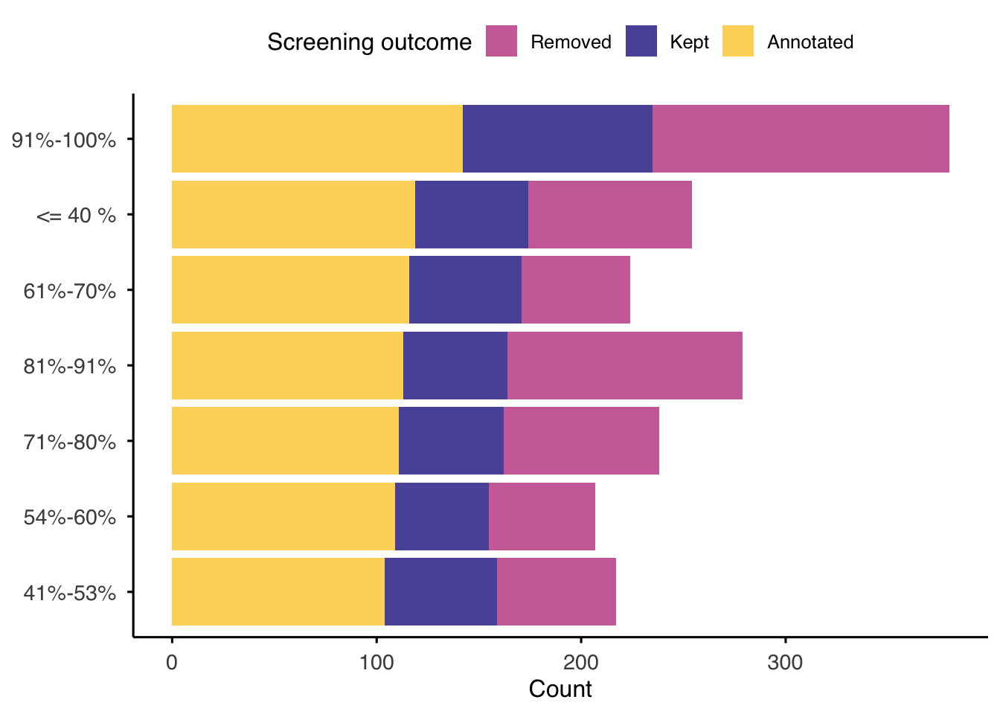
Code
ggsave(here("images", "general_lyric_popularity.pdf"))Saving 7 x 5 in imageTable A2: Lyrics, Popularity
Code
table <- make_apa_freq_table(
lyrics_df|>rename(`Artist Popularity`=artist_playlist_frequency_bin_label),
`Artist Popularity`,
title = md("**Table A2**"),
subtitle = md("*Frequencies by artist playlist frequency*"))
table| Table A2 | ||||
|---|---|---|---|---|
| Frequencies by artist playlist frequency | ||||
| Artist Popularity | Removed | Kept | Annotated | Total n |
| 91%-100% | 145 (38.2%) | 93 (24.5%) | 142 (37.4%) | 380 |
| 81%-91% | 115 (41.2%) | 51 (18.3%) | 113 (40.5%) | 279 |
| <= 40 % | 80 (31.5%) | 55 (21.7%) | 119 (46.9%) | 254 |
| 71%-80% | 76 (31.9%) | 51 (21.4%) | 111 (46.6%) | 238 |
| 41%-53% | 58 (26.7%) | 55 (25.3%) | 104 (47.9%) | 217 |
| 61%-70% | 53 (23.7%) | 55 (24.6%) | 116 (51.8%) | 224 |
| 54%-60% | 52 (25.1%) | 46 (22.2%) | 109 (52.7%) | 207 |
Code
gtsave(table, here("tables", "general_lyric_popularity.tex"))Table A3: Lyrics, Genre
Code
table <- make_genre_comparison_table(lyrics_df,
title = md("**Table A3**"),
subtitle = md("*Comparison of terms of topic tags of initial pool of 15.4k artists, to secondary pool of 2200 songs*")
) %>%
cols_width(lda_genre_terms ~ px(350), artist_topic_bin_labels ~ px(300))
table| Table A3 | |
|---|---|
| Comparison of terms of topic tags of initial pool of 15.4k artists, to secondary pool of 2200 songs | |
| Top LDA terms of initial pool | Top tf-ifd terms of sample |
| All, dubstep, synthpop, 80s, new wave, post-punk, russian, electropop, Disco, electronic | synthpop / new wave / post-punk / dubstep |
| blues, american, USA, Canadian, shoegaze, dream pop, black metal, United States, canada, twee | blues / blues rock / classic blues / black metal |
| christian, gospel, worship, arabic, christian rock, spain, cumbia, mexico, mexican, portuguese | christian / worship / gospel / ccm |
| country, Soundtrack, Alt-country, americana, danish, turkish, video game music, texas, christmas, Disney | classic country / country / honky tonk / traditional country |
| dance, House, trance, electronic, Progressive House, progressive trance, club, electronica, techno, eurodance | eurodance / dance / trance / electronic |
| electronic, ambient, experimental, techno, electronica, electro, House, deep house, minimal, downtempo | electronic / ebm / industrial / electronica |
| folk, singer-songwriter, acoustic, folk rock, bluegrass, indie folk, norwegian, Norway, argentina, americana | folk / singer-songwriter / folk rock / acoustic |
| hardcore, metalcore, metal, hardcore punk, post-hardcore, deathcore, Nu Metal, seen live, melodic hardcore, grindcore | hardcore punk / hardcore / punk rock / deathcore |
| heavy metal, metal, celtic, thrash metal, dutch, seen live, irish, Power metal, finnish, bass | metal / power metal / heavy metal / speed metal |
| Hip-Hop, rap, hip hop, spotify, underground hip-hop, trap, beats, hiphop, underground rap, instrumental hip-hop | hip hop / rap / underground hip-hop / trap |
| instrumental, Classical, piano, Drum and bass, contemporary classical, psytrance, composer, dnb, Drum n Bass, baroque | classical / drum and bass / choral / piano |
| japanese, ska, new age, j-pop, J-rock, japan, Asian, anime, chiptune, soca | j-pop / ska / j-rock / rocksteady |
| jazz, chillout, lounge, trip-hop, downtempo, swing, Fusion, easy listening, Smooth Jazz, acid jazz | big band / jazz / vocal jazz / swing |
| latin, male vocalists, spanish, 90s, italian, salsa, mexico, 00s, 10s, Italy | italian / latin / italian singer-songwriter / latino |
| oldies, death metal, comedy, african, Melodic Death Metal, Brutal Death Metal, doo wop, 50s, spoken word, afrobeat | comedy / afrobeats / african / doo-wop |
| pop, female vocalists, french, female vocalist, pop rock, france, female, Eurovision, chanson francaise, indonesian | pop / female vocalists / chanson / eurovision |
| punk, punk rock, emo, pop punk, post-hardcore, seen live, rock, polish, screamo, chicago | punk rock / pop punk / hardcore punk / ska punk |
| reggae, brazilian, dub, dancehall, brasil, brazil, Stoner Rock, mpb, Sludge, Southern Rock | reggae / roots reggae / dancehall / ragga |
| rnb, german, rockabilly, power pop, Rock and Roll, germany, rock n roll, deutsch, urban, Deutschrap | rock n roll / rockabilly / r&b / new jack swing |
| rock, psychedelic, hard rock, alternative rock, Progressive rock, Psychedelic Rock, classic rock, Korean, alternative, k-pop | rock / psychedelic rock / k-pop / progressive rock |
| seen live, indie, alternative, indie rock, indie pop, rock, british, post-rock, Lo-Fi, australian | indie rock / indie / indie pop / alternative |
| soul, funk, r&b, rhythm and blues, Disco, Greek, rnb, funky, Neo-Soul, northern soul | soul / funk / r&b / motown |
| swedish, guitar, blues rock, lesser known yet streamable artists, United Kingdom, Sweden, england, Flamenco, Jam, Awesome | swedish / swedish pop / blues rock / nordic |
| under 2000 listeners, musical, Reggaeton, Colombia, Broadway, hungarian, Musical theatre, musicals, showtunes, trollerier | musicals / broadway / showtunes / shady |
| world, Garage Rock, 60s, World Music, garage, traditional, Surf, Need to Rate, Indian, darkwave | sufi / gothic rock / darkwave / indian |
Code
gtsave(table, here("tables", "general_lyric_genre_terms.tex"))Figure A4: Lyrics, Genre
Code
make_removed_counts(lyrics_df, artist_topic_bin_labels) +
theme(legend.position = "top", legend.box.margin = margin(l = -65) )
Code
ggsave(here("images", "general_lyric_genre.pdf"))Saving 7 x 5 in imageFigure A5: Lyrics, Topic Tags
Code
make_removed_counts(lyrics_df, topic_label) 
Code
ggsave(here("images", "general_lyric_topic.pdf"))Saving 7 x 5 in imageRepository of sampling procedure can be found here: https://github.com/Gargant0373/PresidentialSpeechSampling/blob/master/sample.py
Figure A6: Speeches, Excerpts by President
Code
colors <- viridis(10)
speech_df |>
mutate(status = if_else(item_ID %in% speech_IDs, "Used", "Not used")) |>
count(president, party, status, name = "n") |>
group_by(president) |>
mutate(total_used = sum(n[status == "Used"])) |>
ungroup() |>
mutate(president = fct_reorder(president, total_used, .desc = F)) |>
ggplot(aes(x = president, y = n, fill = party, alpha = status)) +
geom_col(position = "stack") +
coord_flip() +
scale_alpha_manual(values = c("Used" = 1, "Not used" = 0.3)) +
scale_fill_manual(values = c("Democratic" = colors[5], "Republican" = colors[9])) +
labs(
x = NULL,
y = "Number of speech excerpts",
fill = "Party",
alpha = "Selection"
) +
theme_apa() +
scale_fill_manual(
name = "Party",
values = c("Democratic" = colors[5], "Republican" = colors[9])) +
theme(legend.position = "top")Scale for fill is already present.
Adding another scale for fill, which will replace the existing scale.
Code
ggsave(here("images", "general_speeches_president.pdf"))Saving 7 x 5 in imageTable A5: Speeches, Excerpts by party
Code
df <- speech_df
# function to summarize by party
summarise_party <- function(data) {
data %>%
group_by(party) %>%
summarise(
n_excerpts = n(),
n_speeches = n_distinct(url),
n_presidents = n_distinct(president),
.groups = "drop"
) %>%
mutate(
excerpts_per_president = n_excerpts / n_presidents,
pct_excerpts = n_excerpts / sum(n_excerpts))}
# 1) Full pool
full_summary <- summarise_party(df) %>%
mutate(sample = "Initial pool")
# 2) Annotated subsample
sub_df <- df %>% filter(item_ID %in% speech_IDs)
sub_summary <- summarise_party(sub_df) %>%
mutate(sample = "Sample")
# 3) Combine
combined_summary <- bind_rows(full_summary, sub_summary) %>%
relocate(sample, .before = party)
# 4) Render as gt table
table <- combined_summary %>%
gt(groupname_col = "sample") %>%
tab_header(
title = md("**Table A5**"),
subtitle = md("*Descriptive statistics of speech excerpts by party*")) |>
cols_label(
party = "Party",
n_excerpts = "Total excerpts",
n_speeches = "Unique speeches",
n_presidents = "Unique presidents",
excerpts_per_president = "Avg. excerpts per president",
pct_excerpts = "% of all excerpts") %>%
fmt_number(columns = c(n_excerpts, n_speeches, n_presidents), decimals = 0) %>%
fmt_number(columns = excerpts_per_president, decimals = 1) %>%
fmt_percent(columns = pct_excerpts, decimals = 1) %>%
tab_options(
table.font.size = 12,
heading.align = "left",
table_body.hlines.width = px(0),
table.border.top.width = px(0),
table.border.bottom.width = px(1),
column_labels.border.top.width = px(0),
column_labels.border.bottom.width = px(1)) %>%
tab_style(
style = cell_text(align = "center", whitespace = "pre-wrap"),
locations = cells_column_labels(everything())) |>
cols_width(
party ~ px(100),
n_excerpts ~ px(100),
n_speeches ~ px(100),
n_presidents ~ (100),
excerpts_per_president ~ px(100),
pct_excerpts ~ px(100)) %>%
tab_style(
style = cell_text(align = "center"),
locations = cells_row_groups()) %>%
cols_align(align = "center", columns = everything())
table| Table A5 | |||||
|---|---|---|---|---|---|
| Descriptive statistics of speech excerpts by party | |||||
| Party | Total excerpts | Unique speeches | Unique presidents | Avg. excerpts per president | % of all excerpts |
| Initial pool | |||||
| Democratic | 499 | 63 | 9 | 55.4 | 43.0% |
| Republican | 662 | 66 | 12 | 55.2 | 57.0% |
| Sample | |||||
| Democratic | 146 | 58 | 9 | 16.2 | 44.8% |
| Republican | 180 | 64 | 12 | 15.0 | 55.2% |
Code
gtsave(table, here("tables", "general_speeches_party.tex"))Pilot Study
Demographics
Methods
The total participant pool consisted of 296 participants (48.6% female, \(M_{\text{age}} = 36.1\) years, \(SD_{\text{age}} = 11.8\)) (see Table 1).
Table 1: pilot demographics
Code
# Pilot Methods:
table <- imap_dfr(
pilot_2_demog_dfs,
~ summarize_demographics(.x, pilot_labels[[.y]] %||% .y))
table <- table %>%
gt() %>%
cols_align(align = "left", columns = c(Study)) %>%
cols_align(align = "center", columns = c(N, `% Female`, `Age range`, `Age M (SD)`)) %>%
fmt_number(columns = `% Female`, decimals = 1)
table| Study | N | Age M (SD) | Age range | % Female |
|---|---|---|---|---|
| Pilot 1 (Lyrics) | 99 | 36.1 (12.4) | 18–82 | 48.5 |
| Pilot 2 (Speeches: Ethnicity) | 99 | 35.2 (11.2) | 18–64 | 48.5 |
| Pilot 3 (Speeches: Political) | 98 | 36.8 (11.9) | 21–74 | 49.0 |
Code
gtsave(table, here("tables", "pilot_demographics.tex"))
rm(table)Table 2a: Ethnicity
Code
table <- imap_dfr(
pilot_2_demog_dfs[1:2],
~ summarize_ethnicity(.x, pilot_labels[[.y]] %||% .y))
table <- table |>
gt() %>%
cols_label(
`Black/African American` = html("Black/<br>African American"),
`Latino/Hispanic` = html("Latino/<br>Hispanic"),
Asian = "Asian",
White = "White") |>
fmt_number(columns = -Study, decimals = 1) %>%
cols_align(align = "center",
columns = c(Asian, `Black/African American`,
`Latino/Hispanic`, White))
table| Study | Asian | Black/ African American |
Latino/ Hispanic |
White |
|---|---|---|---|---|
| Pilot 1 (Lyrics) | 23 (23.2%) | 26 (26.3%) | 25 (25.3%) | 25 (25.3%) |
| Pilot 2 (Speeches: Ethnicity) | 24 (24.2%) | 25 (25.3%) | 25 (25.3%) | 25 (25.3%) |
Code
gtsave(table, here("tables", "pilot_ethnicity.tex"))
rm(table)Table 2b: spectrum
Code
table <- pilot_spectrum_tbl <- imap_dfr(
pilot_2_demog_dfs["speeches2"],
~ summarize_spectrum(.x, pilot_labels[[.y]] %||% .y))
table <- pilot_spectrum_tbl |>
gt() %>%
fmt_number(
columns = -Study,
decimals = 1) %>%
cols_align(align = "center", columns = c(Conservative, Liberal, Moderate))
table| Study | Conservative | Liberal | Moderate |
|---|---|---|---|
| Pilot 3 (Speeches: Political) | 33 (33.7%) | 32 (32.7%) | 33 (33.7%) |
Code
gtsave(table, here("tables", "pilot_political_leaning.tex"))
rm(table)Appendix C
Table C1: Spectrum pilot ethnicity
Code
table <- pilot_2_demog_dfs[[3]] |>
count(Ethnicity) %>%
mutate(
pct = 100 * n / sum(n),
value = paste0(n, " (", round(pct, 1), "%)")) |>
select(Ethnicity, value) |>
gt() |>
cols_label(Ethnicity = "Ethnicity (Simplified)", value = "N (%)") |>
cols_align(align = "center", columns = c(Ethnicity, value))
table| Ethnicity (Simplified) | N (%) |
|---|---|
| Asian | 5 (5.1%) |
| Black | 35 (35.7%) |
| Mixed | 11 (11.2%) |
| Other | 3 (3.1%) |
| White | 42 (42.9%) |
| NA | 2 (2%) |
Code
gtsave(table, here("tables", "pilot_ethnicity_speeches2.tex"))
rm(table)Figure C1: lyric preference intensity
Code
pilot_2_dfs <- readRDS(file = here("_data", "_participant_scores", "wave_2", "pilot_2_dfs.RDS"))
df <- pilot_2_dfs[[1]] %>%
select(participant_ID,
Q1_1, # I prefer music that contains lyrics over music that does not
Q1_2, # My favorite songs all have lyrics
Q1_3, # I skip songs that don't have lyrics
Q1_4, # If a song has lyrics that I don't like, I skip it
Q1_5, # I listen to music in languages that I dont' speak
Q1_6, # I look at the lyrics of songs in the apps of streaming services that I use
Q2_1 # percentage of music lib
) %>%
unique()
pilot_music_lib_plot <- df %>%
ggplot(aes(x=as.numeric(Q2_1))) +
geom_histogram(bins=10, aes(y=..density..)) +
geom_density() +
xlab("Music Library Percentage") + ylab("Count") +
theme_classic()Code
(pilot_lyric_questions_plot | pilot_music_lib_plot) +
plot_annotation(tag_levels = "A")Picking joint bandwidth of 0.513Warning: The dot-dot notation (`..density..`) was deprecated in ggplot2 3.4.0.
ℹ Please use `after_stat(density)` instead.
Code
ggsave(here("images", "pilot_lyrics_questions.pdf"), height = 5, width = 7)Picking joint bandwidth of 0.513Quiz results
Methods
Figure 4
Code
# pilot quiz plots
# note: no screening was applied based on quiz results in the pilot
df <- bind_rows(pilot_quiz_dfs, .id = "Pilot")
p1 <- plot_bars(df, Quiz1_1, Quiz1, option = "D") +
xlab("") + ylab("Count") + scale_y_continuous(limits = c(0, 225)) +
apa_theme
p2 <- plot_bars(df, Quiz2_1, Quiz2, option = "D") +
xlab("") + ylab("") + scale_y_continuous(limits = c(0, 225)) +
apa_theme
p3 <- plot_bars(df, Quiz3_1, Quiz3, option = "D") +
xlab("") + ylab("") + scale_y_continuous(limits = c(0, 225)) +
apa_theme
# (p1 | p2 | p3) +
# plot_layout(guides = "collect") &
# theme(legend.position = "bottom")Code
# main study quiz plots
# note: includes those that were screened out
df <- main_quiz_df
p4 <- plot_bars(df, Quiz1, Quiz_1, option = "D") +
xlab("Q1 Responses") + ylab("Count") + scale_y_continuous(limits = c(0, 2000)) +
apa_theme
p5 <- plot_bars(df, Quiz2, Quiz_2, option = "D") +
xlab("Q2 Responses") + ylab("") + scale_y_continuous(limits = c(0, 2000)) +
apa_theme
p6 <- plot_bars(df, Quiz3, Quiz_3, option = "D") +
xlab("Q3 Responses") + ylab("") + scale_y_continuous(limits = c(0, 2000)) +
apa_theme
# (p4 | p5 | p6) +
# plot_layout(guides = "collect") &
# theme(legend.position = "bottom")Code
((p1 | p2 | p3) / (p4 | p5 | p6)) +
plot_annotation(
tag_levels = "A") +
plot_layout(guides = "collect") &
theme(legend.position = "bottom",
plot.title = element_markdown(hjust = 0),
plot.subtitle = element_markdown(hjust = 0),
plot.caption = element_markdown(hjust = 0))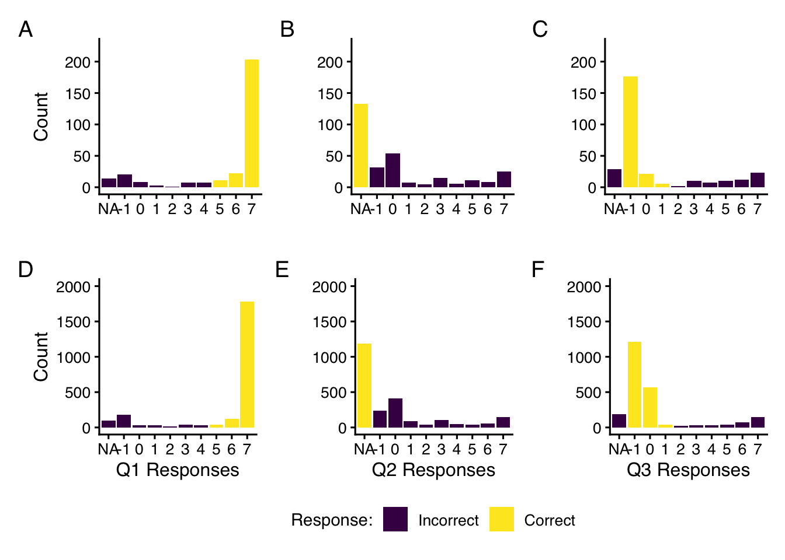
Code
#ggsave(here("images", "quiz_correctness_by_study.pdf"))
rm(p1, p2, p3, p4, p5, p6)Appendix D
Table D1: Quiz Correctness
Code
summarize_study <- function(df) {
df %>%
summarise(
Q1 = sprintf("%d (%.1f%%)", sum(Quiz1, na.rm = TRUE),
mean(Quiz1, na.rm = TRUE) * 100),
Q2 = sprintf("%d (%.1f%%)", sum(Quiz2, na.rm = TRUE),
mean(Quiz2, na.rm = TRUE) * 100),
Q3 = sprintf("%d (%.1f%%)", sum(Quiz3, na.rm = TRUE),
mean(Quiz3, na.rm = TRUE) * 100)) %>%
pivot_longer(everything(), names_to = "Question", values_to = "N_percent")
}
table <- lapply(pilot_quiz_dfs, summarize_study) %>%
bind_rows(.id = "Study") %>%
pivot_wider(names_from = Study, values_from = N_percent) %>%
gt() %>%
cols_label(
Question = "Item",
lyrics = "Pilot: Lyrics",
speeches1 = "Pilot: Speeches 1",
speeches2 = "Pilot: Speeches 2"
) %>%
cols_align(
align = "center",
columns = everything()
) %>%
cols_width(everything() ~ px(100))
table| Item | Pilot: Lyrics | Pilot: Speeches 1 | Pilot: Speeches 2 |
|---|---|---|---|
| Q1 | 77 (77.8%) | 81 (81.8%) | 78 (79.6%) |
| Q2 | 48 (48.5%) | 43 (43.4%) | 42 (42.9%) |
| Q3 | 69 (69.7%) | 65 (65.7%) | 69 (70.4%) |
Code
gtsave(table, here("tables", "pilot_quiz_correctness.tex"))
rm(summarize_study)Code
summarize_study <- function(df) {
df %>%
summarise(
Q1 = sprintf("%d (%.1f%%)", sum(Quiz_1, na.rm = TRUE),
mean(Quiz_1, na.rm = TRUE) * 100),
Q2 = sprintf("%d (%.1f%%)", sum(Quiz_2, na.rm = TRUE),
mean(Quiz_2, na.rm = TRUE) * 100),
Q3 = sprintf("%d (%.1f%%)", sum(Quiz_3, na.rm = TRUE),
mean(Quiz_3, na.rm = TRUE) * 100)
) %>%
pivot_longer(everything(), names_to = "Question", values_to = "N_percent")
}
# create a list of dataframes, one for each study
main_quiz_dfs <- split.data.frame(main_quiz_df, main_quiz_df$Study)
table <- lapply(main_quiz_dfs, summarize_study) %>%
bind_rows(.id = "Study") %>%
pivot_wider(names_from = Study, values_from = N_percent) %>%
gt() %>%
cols_label(
Question = "Item",
lyrics_1 = "Wave: Lyrics 1",
lyrics_2 = "Wave: Lyrics 2",
speeches_1 = "Wave: Speeches 1",
speeches_2 = "Wave: Speeches 2"
) %>%
cols_align(
align = "center",
columns = everything()
) %>%
cols_width(everything() ~ px(100))
table| Item | Wave: Lyrics 1 | Wave: Lyrics 2 | Wave: Speeches 1 | Wave: Speeches 2 |
|---|---|---|---|---|
| Q1 | 456 (80.7%) | 449 (85.2%) | 557 (82.5%) | 476 (80.0%) |
| Q2 | 306 (54.2%) | 282 (53.5%) | 312 (46.2%) | 284 (47.7%) |
| Q3 | 428 (75.8%) | 432 (82.0%) | 514 (76.1%) | 445 (74.8%) |
Code
gtsave(table, here("tables", "main_quiz_correctness.tex"))
rm(table, quiz_dfs)Warning in rm(table, quiz_dfs): object 'quiz_dfs' not foundSubjectivity & confidence
Methods
Code
pilot_2_dfs <- readRDS(file = here("_data", "_participant_scores", "wave_2", "pilot_2_dfs.RDS"))
plot_dfs <- lapply(pilot_2_dfs, function(df){
df %>% mutate(c = case_when(
c == "Completely Confident" ~ 5,
c == "Somewhat Confident" ~ 4,
c == "Neither Confident nor Unconfident" ~ 3,
c == "Somewhat Unconfident" ~ 2,
c == "Completely Unconfident" ~ 1
))
})
pilot_confidence_summary_stats <- plot_dfs |> bind_rows(.id = "Pilot") |> select(participant_ID, c) |>
summarise(
median_value = median(c, na.rm = TRUE),
pct_over_4 = sum(c >= 4, na.rm = TRUE) / sum(!is.na(c)) * 100)
pilot_confidence_summary_stats median_value pct_over_4
1 4 78.31081Code
plot_dfs <- lapply(pilot_2_dfs, function(df){
df %>% mutate(subjective = case_when(
`subjective ` == "Completely subjective" ~ 7,
`subjective ` == "Very subjective" ~ 6,
`subjective ` == "Somewhat subjective" ~ 5,
`subjective ` == "Neither subjective nor objective" ~ 4,
`subjective ` == "Somewhat objective" ~ 3,
`subjective ` == "Very objective" ~ 2,
`subjective ` == "Completely objective" ~ 1
))
})
pilot_subjectivity_summary_stats <- plot_dfs |> bind_rows(.id = "Pilot") |>
select(participant_ID, subjective) |>
summarise(
median_value = median(subjective, na.rm = TRUE),
pct_over_4 = sum(subjective >= 5, na.rm = TRUE) / sum(!is.na(subjective)) * 100)
print("subjectivity:")[1] "subjectivity:"Code
pilot_subjectivity_summary_stats median_value pct_over_4
1 5 73.98649Appendix E
Figure E1
Code
(pilot_confidence_plot / pilot_subjectivity_plot) +
plot_annotation(tag_levels = "A")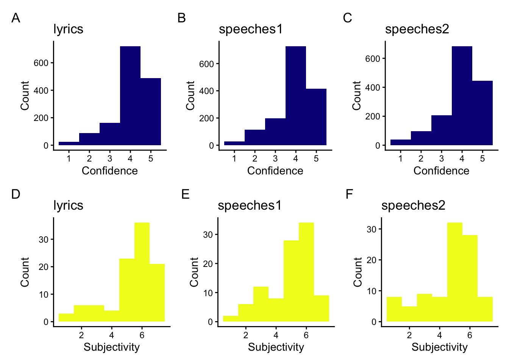
Code
#ggsave(here("images", "pilot_confidence_subjectivity.pdf"))Rater number estimation & Inter-rater reliability
Results
Figure 3: Target N
Code
p1 <- plot_raters(
pilot_2_lyrics_by_row_dfs[[1]] %>% filter(n <= 25),
metric = r, "Pearson's r", option = "plasma") +
geom_vline(xintercept = 0.9, color = "red", size = .4, linetype = "dashed") +
ggtitle("Lyrics")
p2 <- plot_raters(
pilot_2_lyrics_by_row_dfs[[1]] %>% filter(n <= 25),
metric = ICC2k, "ICC(2,k)", option = "plasma") +
geom_vline(xintercept = 0.75, color = "red", size = .4, linetype = "dashed")
figure_2a <- (p1 /p2) +
plot_annotation(
tag_levels = 'A',
title = "Lyrics") +
plot_layout(guides = "collect") &
theme(legend.position = "bottom",
plot.title = element_markdown(hjust = 0),
plot.subtitle = element_markdown(hjust = 0),
plot.caption = element_markdown(hjust = 0))
p1 <- plot_raters(
pilot_2_speeches1_by_row_dfs[[1]] %>% filter(n >= 25),
metric = r, "Pearson's r", option = "viridis") +
geom_vline(xintercept = 0.9, color = "red", size = .4, linetype = "dashed") +
ggtitle("Speeches:<br>Ethnicity")
p2 <- plot_raters(
pilot_2_speeches1_by_row_dfs[[1]] %>% filter(n >= 25),
metric = ICC2k, "ICC(2,k)", option = "viridis") +
geom_vline(xintercept = 0.75, color = "red", size = .4, linetype = "dashed")
figure_2b <- (p1 /p2) +
plot_annotation(
tag_levels = 'A',
title = "Speeches:<br>Ethnicity"
) &
theme(legend.position = "bottom",
plot.title = element_markdown(hjust = 0),
plot.subtitle = element_markdown(hjust = 0),
plot.caption = element_markdown(hjust = 0))
p1 <- plot_raters(
pilot_2_speeches2_by_row_dfs[[1]] %>% filter(n >= 25),
metric = r, "Pearson's r", option = "viridis") +
geom_vline(xintercept = 0.9, color = "red", size = .4, linetype = "dashed") +
ggtitle("Speeches:<br>Spectrum")
p2 <- plot_raters(
pilot_2_speeches2_by_row_dfs[[1]] %>% filter(n >= 25),
metric = ICC2k, "ICC(2,k)", option = "viridis") +
geom_vline(xintercept = 0.75, color = "red", size = .4, linetype = "dashed")
figure_2c <- (p1 /p2) +
plot_annotation(
tag_levels = 'A',
title = "Speeches<br>Spectrum") &
theme(legend.position = "bottom",
plot.title = element_markdown(hjust = 0),
plot.subtitle = element_markdown(hjust = 0),
plot.caption = element_markdown(hjust = 0))
right_group <- (figure_2b | figure_2c) +
plot_layout(guides = "collect") &
theme(legend.position = "bottom",
legend.justification = "center")
figure <- (figure_2a| right_group) +
# relative size of each plot
plot_layout(widths = c(.8, 2)) +
plot_annotation(tag_levels = 'A')
figure
Code
#ggsave(here("images", "pilot_reliability_by_n.pdf"),figure)
rm(figure_2a, figure_2b, figure_2c, figure)Figures 5, 6, 7
Code
fig_lyrics <- plot_icc_by_metric_pair(pilot_2_likert_summary_dfs[[1]], "inferno", "Pilot 1: Lyrics")
fig_lyrics
Code
ggsave(here("images", "pilot_lyrics_reliability_by_value.pdf"), height=8.5)Saving 7 x 8.5 in imageCode
fig_speeches1 <- plot_icc_by_metric_pair(pilot_2_likert_summary_dfs[[2]], "D", "Pilot 2: Speeches (Ethnicity)")
fig_speeches1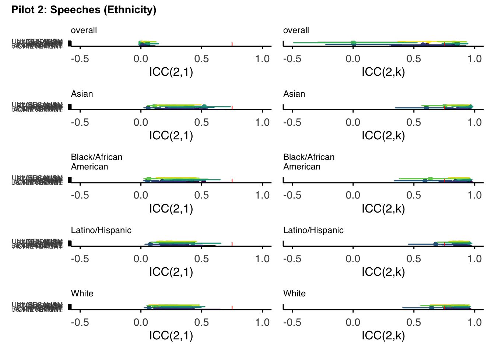
Code
ggsave(here("images", "pilot_speeches1_reliability_by_value.pdf"), height=8.5)Saving 7 x 8.5 in imageCode
fig_speeches2 <- plot_icc_by_metric_pair(pilot_2_likert_summary_dfs[[3]], "D", "Pilot 3: Speeches (Spectrum)")
fig_speeches2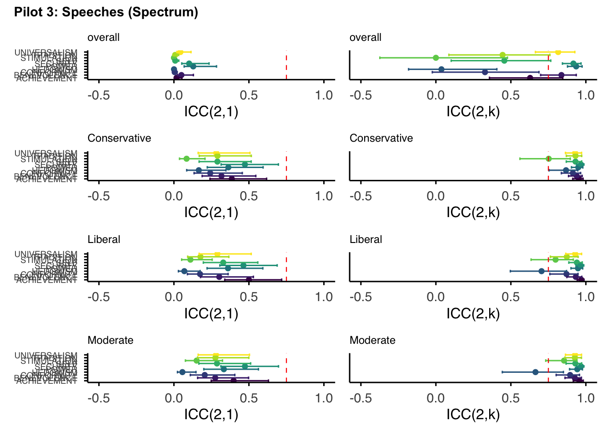
Code
ggsave(here("images", "pilot_speeches2_reliability_by_value.pdf"), height=8.5)Saving 7 x 8.5 in imageMain Study
Descriptives
Methods
Table 3: Sample Descriptives
Code
wave_demog_tbl <- imap_dfr(
wave_2_demog_dfs,
~ summarize_demographics(.x, wave_labels[[.y]] %||% .y))
# main table
table <- wave_demog_tbl %>%
gt() %>%
cols_align(align = "left", columns = c(Study)) %>%
cols_align(align = "center", columns = c(N, `% Female`, `Age range`, `Age M (SD)`)) %>%
fmt_number(columns = `% Female`, decimals = 1)
table | Study | N | Age M (SD) | Age range | % Female |
|---|---|---|---|---|
| Main 1 (Lyrics 1) | 414 | 34.8 (12.2) | 18–82 | 52.9 |
| Main 2 (Lyrics 2) | 422 | 36.0 (12.0) | 18–73 | 51.2 |
| Main 3 (Speeches 1) | 502 | 35.0 (10.7) | 18–70 | 50.8 |
| Main 4 (Speeches 2) | 423 | 36.7 (12.6) | 18–80 | 47.8 |
Code
gtsave(table, here("tables", "main_demographics.tex"))
rm(table)Table 4a: Ethnicity Descriptives
Code
wave_ethnicity_tbl <- imap_dfr(
wave_2_demog_dfs,
~ summarize_ethnicity(.x, wave_labels[[.y]] %||% .y))
table <- wave_ethnicity_tbl |>
gt() %>%
cols_label(
`Black/African American` = html("Black/<br>African American"),
`Latino/Hispanic` = html("Latino/<br>Hispanic"),
Asian = "Asian",
White = "White") |>
fmt_number(columns = -Study, decimals = 1) %>%
cols_align(align = "center",
columns = c(Asian, `Black/African American`,
`Latino/Hispanic`, White))
table| Study | Asian | Black/ African American |
Latino/ Hispanic |
White |
|---|---|---|---|---|
| Main 1 (Lyrics 1) | 111 (26.8%) | 89 (21.5%) | 105 (25.4%) | 109 (26.3%) |
| Main 2 (Lyrics 2) | 110 (26.1%) | 92 (21.8%) | 110 (26.1%) | 110 (26.1%) |
| Main 3 (Speeches 1) | 112 (22.3%) | 130 (25.9%) | 127 (25.3%) | 133 (26.5%) |
| Main 4 (Speeches 2) | 100 (23.6%) | 107 (25.3%) | 103 (24.3%) | 113 (26.7%) |
Code
gtsave(table, here("tables", "main_ethnicity.tex"))
rm(table)Table 4b: Spectrum descriptives
Code
wave_spectrum_tbl <- imap_dfr(
wave_2_demog_dfs[3:4],
~ summarize_spectrum(.x, wave_labels[[.y]] %||% .y))
table <- wave_spectrum_tbl |>
gt() %>%
fmt_number(
columns = -Study,
decimals = 1
) %>%
cols_align(align = "center", columns = c(Conservative, Liberal, Moderate))
table| Study | Conservative | Liberal | Moderate |
|---|---|---|---|
| Main 3 (Speeches 1) | 154 (30.7%) | 174 (34.7%) | 174 (34.7%) |
| Main 4 (Speeches 2) | 129 (30.5%) | 157 (37.1%) | 137 (32.4%) |
Code
gtsave(table, here("tables", "main_political_leaning.tex"))
rm(table)In-text: ratings / items
Code
summarize_ratings <- function(df) {
df <- df |>
select(participant_ID, item_ID) |>
distinct()
total_ratings <- nrow(df)
item_counts <- df |>
count(item_ID, name = "n_ratings_item")
participant_counts <- df |>
count(participant_ID, name = "n_ratings_participant")
n_items <- nrow(item_counts)
median_item <- median(item_counts$n_ratings_item)
median_participant <- median(participant_counts$n_ratings_participant)
latex_sentence <- sprintf(
"In total, we collected %s ratings of %s items. The median number of ratings per item was %s, and the median number of ratings per participant was %s.",
total_ratings, n_items, median_item, median_participant
)
latex_sentence
}
summarize_ratings(lyrics_df)[1] "In total, we collected 11704 ratings of 800 items. The median number of ratings per item was 15, and the median number of ratings per participant was 14."Code
summarize_ratings(speeches_df)[1] "In total, we collected 12958 ratings of 300 items. The median number of ratings per item was 43, and the median number of ratings per participant was 14."Results
Figure 9: Ratings by Value / Text type
Code
plot_value_histograms_with_na <- function(df, text_label, option) {
df <- df |> mutate(
value = factor(value, levels = sort(unique(value))),
response = ifelse(is.na(rating), "NA", as.character(rating)),
response = factor(
response,
levels = c("NA", "-1", "0", "1", "2", "3", "4", "5", "6", "7")))
# Compute % NA per value
na_annot <- df %>%
group_by(value) %>%
summarise(na_pct = mean(is.na(rating)) * 100, .groups = "drop")
ggplot(df, aes(x = response, fill = value)) +
geom_bar() +
facet_wrap(~ value, ncol = 2) +
geom_text(
# this produces the label
data = na_annot, aes(label = sprintf("NA: %.1f%%", na_pct)),
x = 5, y = 3000,
size = 3.5) +
scale_fill_viridis_d(option = option) +
scale_x_discrete(drop = F) +
scale_y_continuous(limits = c(0, 4800)) +
theme_classic() +
labs(
title = paste(text_label),
x = "Response", y = "") +
theme(strip.text = element_text(face = "bold"),
axis.text.y = element_text(size = 12),
legend.position = "none")
}
p1 <- plot_value_histograms_with_na(wave_2_dfs$wave_2_lyrics, "Lyrics", option = "inferno")
p2 <- plot_value_histograms_with_na(wave_2_dfs$wave_2_speeches, "Speeches", option = "D")
hist_plot <- (p1 | p2) + plot_annotation(tag_levels = "A")
hist_plot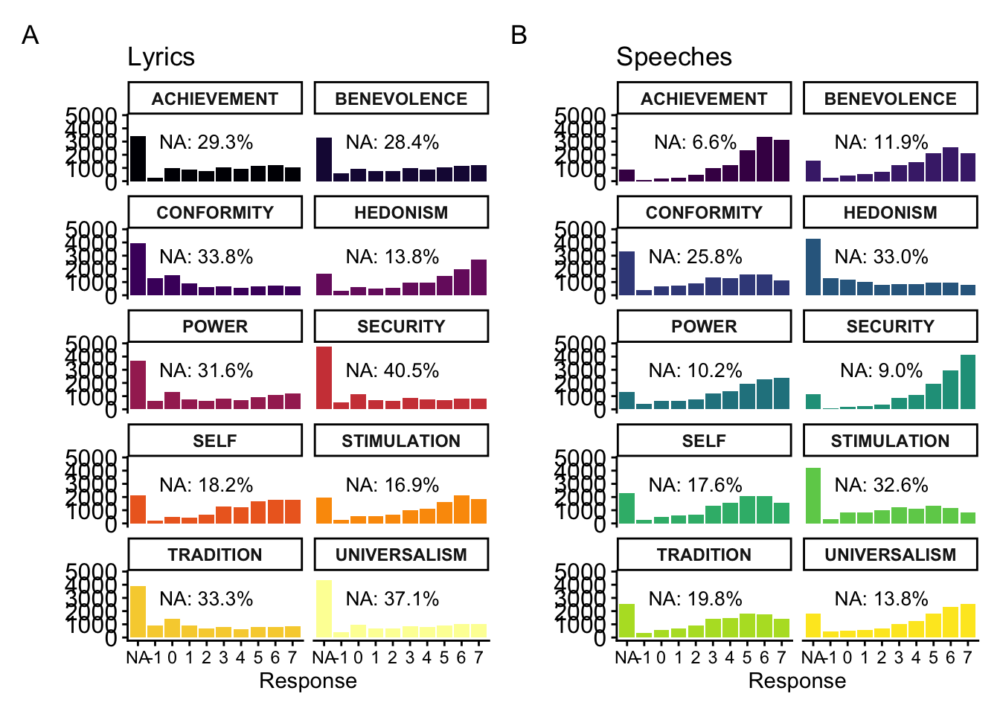
Code
ggsave(here("images", "main_histogram_by_text.pdf"))Saving 7 x 5 in imageSubjectivity & confidence
Appendix E
Figure E2: Subjectivity and Confidence
Code
(main_confidence_plot / main_subjectivity_plot) +
plot_annotation(tag_levels = "A")Warning: Removed 2 rows containing non-finite outside the scale range
(`stat_bin()`).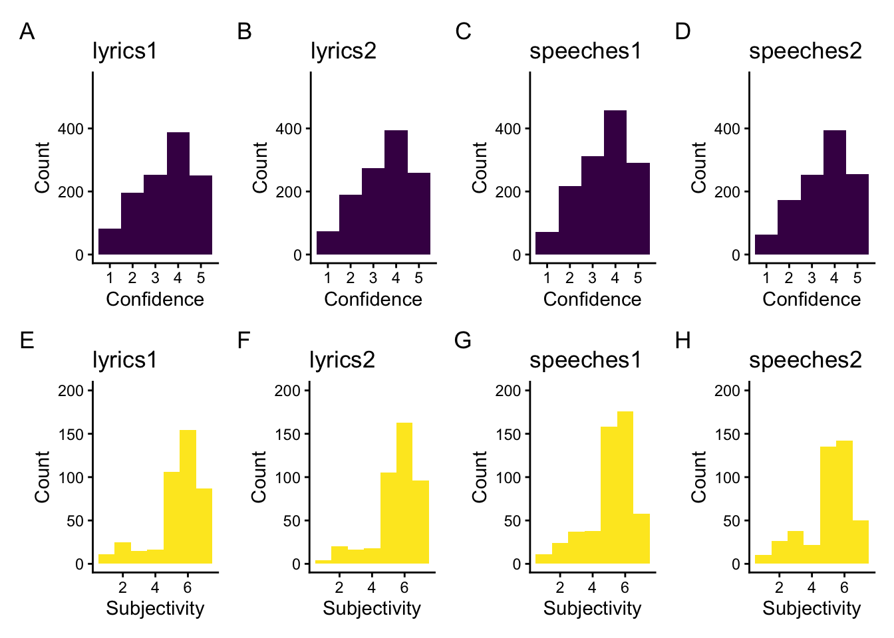
Code
ggsave(here("images", "main_confidence_subjectivity.pdf"))Saving 7 x 5 in imageWarning: Removed 2 rows containing non-finite outside the scale range
(`stat_bin()`).Results
in-text: subjectivity by text type
Code
# Prepare data
subjective_df <- plot_df |>
dplyr::select(participant_ID, item_ID, subjective, study) |>
dplyr::filter(!is.na(subjective))
# Overall summary
overall_stats <- subjective_df |>
dplyr::summarise(
median_value = median(subjective, na.rm = TRUE),
pct_over_4 = sum(subjective >= 5, na.rm = TRUE) / sum(!is.na(subjective)) * 100
)
# Fit cross-classified mixed model
subj_model <- lmer(
subjective ~ study +
(1 | participant_ID) +
(1 | item_ID),
data = subjective_df
)boundary (singular) fit: see help('isSingular')Code
# ANOVA on fixed effect
a <- anova(subj_model)
# Extract test statistic + p-value
F_val <- a$`F value`[1]
p_val <- a$`Pr(>F)`[1]
# Format p-value for LaTeX
p_clean <- if (p_val < 0.0001) {
"$p < .0001$"
} else {
sprintf("$p = %.3f$", p_val)
}
# Group medians
group_medians <- subjective_df |>
dplyr::group_by(study) |>
dplyr::summarise(median_subjective = median(subjective, na.rm = TRUE), .groups = "drop")
median_lyrics <- group_medians$median_subjective[group_medians$study == "Lyrics"]
median_speeches <- group_medians$median_subjective[group_medians$study == "Speeches"]
# Build LaTeX sentence
if (p_val < 0.05) {
latex_sentence <- sprintf(
"Participants rated the task as moderately subjective overall (median = %s), with %.1f\\%% of responses falling on the subjective side of the scale. A cross-classified mixed-effects model revealed a significant difference by text type: lyrics had a median rating of %s, while speeches had a median of %s ($F = %.2f$, %s).",
overall_stats$median_value, overall_stats$pct_over_4,
median_lyrics, median_speeches, F_val, p_clean
)
} else {
latex_sentence <- sprintf(
"Participants rated the task as moderately subjective overall (median = %s), with %.1f\\%% of responses falling on the subjective side of the scale. A cross-classified mixed-effects model found no significant difference by text type: lyrics had a median rating of %s, while speeches had a median of %s ($F = %.2f$, %s).",
overall_stats$median_value, overall_stats$pct_over_4,
median_lyrics, median_speeches, F_val, p_clean
)
}
# Output
list(
model = subj_model,
anova = a,
overall_stats = overall_stats,
group_medians = group_medians,
latex_sentence = latex_sentence
)$model
Linear mixed model fit by REML ['lmerModLmerTest']
Formula: subjective ~ study + (1 | participant_ID) + (1 | item_ID)
Data: subjective_df
REML criterion at convergence: -14519.83
Random effects:
Groups Name Std.Dev.
participant_ID (Intercept) 1.4227
item_ID (Intercept) 0.0000
Residual 0.1399
Number of obs: 24654, groups: participant_ID, 1710; item_ID, 1100
Fixed Effects:
(Intercept) studySpeeches
5.4775 -0.3919
optimizer (nloptwrap) convergence code: 0 (OK) ; 0 optimizer warnings; 1 lme4 warnings
$anova
Type III Analysis of Variance Table with Satterthwaite's method
Sum Sq Mean Sq NumDF DenDF F value Pr(>F)
study 55.448 55.448 1 23420 2832.6 < 0.00000000000000022 ***
---
Signif. codes: 0 '***' 0.001 '**' 0.01 '*' 0.05 '.' 0.1 ' ' 1
$overall_stats
# A tibble: 1 × 2
median_value pct_over_4
<dbl> <dbl>
1 6 81.2
$group_medians
# A tibble: 2 × 2
study median_subjective
<chr> <dbl>
1 Lyrics 6
2 Speeches 5
$latex_sentence
[1] "Participants rated the task as moderately subjective overall (median = 6), with 81.2\\% of responses falling on the subjective side of the scale. A cross-classified mixed-effects model revealed a significant difference by text type: lyrics had a median rating of 6, while speeches had a median of 5 ($F = 2832.64$, $p < .0001$)."in-text: confidence by text type
Code
stats <- plot_df |>
select(participant_ID, c) |>
summarise(
median_value = median(c, na.rm = TRUE),
pct_over_4 = sum(c >= 4, na.rm = TRUE) / sum(!is.na(c)) * 100
)
latex_sentence <- sprintf(
"Participants reported a median confidence rating of %s, and %.1f\\%% of all ratings were above the scale midpoint.",
stats$median_value, stats$pct_over_4
)
list(
summary = stats,
latex_sentence = latex_sentence
)$summary
# A tibble: 1 × 2
median_value pct_over_4
<dbl> <dbl>
1 4 72.7
$latex_sentence
[1] "Participants reported a median confidence rating of 4, and 72.7\\% of all ratings were above the scale midpoint."Code
latex_sentence[1] "Participants reported a median confidence rating of 4, and 72.7\\% of all ratings were above the scale midpoint."Code
# Prepare data
conf_df <- plot_df |>
dplyr::select(participant_ID, item_ID, c, study) |>
dplyr::filter(!is.na(c))
# Fit cross-classified mixed model
conf_model <- lmer(
c ~ study +
(1 | participant_ID) +
(1 | item_ID),
data = conf_df
)
# ANOVA on fixed effect
a <- anova(conf_model)
# Extract test statistic + p-value
F_val <- a$`F value`[1]
p_val <- a$`Pr(>F)`[1]
# Format p-value for LaTeX
p_clean <- if (p_val < 0.0001) {
"$p < .0001$"
} else {
sprintf("$p = %.3f$", p_val)
}
# Direction (optional but informative)
group_medians <- conf_df |>
dplyr::group_by(study) |>
dplyr::summarise(median_conf = median(c), .groups = "drop")
s1 <- group_medians$study[1]
s2 <- group_medians$study[2]
m1 <- group_medians$median_conf[1]
m2 <- group_medians$median_conf[2]
# Build a LaTeX sentence that adapts to significance
if (p_val < 0.05) {
latex_sentence <- sprintf(
"A cross-classified mixed-effects model tested whether confidence ratings differed by text type, including random intercepts for participants and items. Confidence differed significantly between %s (median = %s) and %s (median = %s; $F = %.2f$, %s).",
s1, m1, s2, m2, F_val, p_clean
)
} else {
latex_sentence <- sprintf(
"A cross-classified mixed-effects model tested whether confidence ratings differed by text type, including random intercepts for participants and items. Confidence did not differ significantly between %s (median = %s) and %s (median = %s; $F = %.2f$, %s).",
s1, m1, s2, m2, F_val, p_clean
)
}
list(
model = conf_model,
anova = a,
group_medians = group_medians,
latex_sentence = latex_sentence
)$model
Linear mixed model fit by REML ['lmerModLmerTest']
Formula: c ~ study + (1 | participant_ID) + (1 | item_ID)
Data: conf_df
REML criterion at convergence: 57195.5
Random effects:
Groups Name Std.Dev.
participant_ID (Intercept) 0.6399
item_ID (Intercept) 0.2084
Residual 0.6895
Number of obs: 24663, groups: participant_ID, 1710; item_ID, 1100
Fixed Effects:
(Intercept) studySpeeches
3.83156 -0.01514
$anova
Type III Analysis of Variance Table with Satterthwaite's method
Sum Sq Mean Sq NumDF DenDF F value Pr(>F)
study 0.13202 0.13202 1 3401.9 0.2777 0.5982
$group_medians
# A tibble: 2 × 2
study median_conf
<chr> <dbl>
1 Lyrics 4
2 Speeches 4
$latex_sentence
[1] "A cross-classified mixed-effects model tested whether confidence ratings differed by text type, including random intercepts for participants and items. Confidence did not differ significantly between Lyrics (median = 4) and Speeches (median = 4; $F = 0.28$, $p = 0.598$)."Inter-rater reliability
Results
in-text: ICC by text type
Code
report_icc <- function(icc_df, text_type) {
summary <- icc_df %>%
filter(subset == "overall") %>%
summarise(
min = round(min(ICC2k), 2),
max = round(max(ICC2k), 2),
mean = round(mean(ICC2k), 2))
cat(sprintf(
"For %s, ICC(2,k) ranged from %.2f to %.2f (M = %.2f).\n",
text_type, summary$min, summary$max, summary$mean))
}
report_icc(ethnicity_subsample_ICC_dfs[["lyrics"]], "lyrics")For lyrics, ICC(2,k) ranged from 0.99 to 1.00 (M = 0.99).Code
report_icc(ethnicity_subsample_ICC_dfs[["speeches"]], "speeches")For speeches, ICC(2,k) ranged from 0.91 to 0.99 (M = 0.96).Appendix F
Unused ICC by text type
Code
p_lyrics <- plot_icc_overall(ethnicity_subsample_ICC_dfs[[1]], option = "plasma", title = "Lyrics")
p_speeches <- plot_icc_overall(ethnicity_subsample_ICC_dfs[[2]], option = "D", title = "Speeches")
figure <- p_lyrics | p_speeches
figure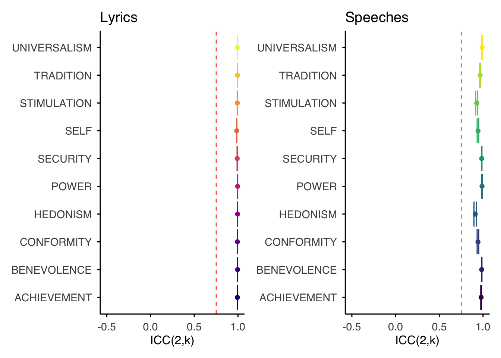
Code
ggsave(here("images", "main_reliability_by_value.pdf"), figure, height = 6)Saving 7 x 6 in imageFigures F1, F2, F3
Code
plot_icc_by_subset <- function(df, option, title) {
subsets <- unique(df$subset)
panels <- lapply(subsets, function(sub) {
df %>%
filter(subset == sub) %>%
ggplot(aes(y = value, x = ICC2k, color = value)) +
geom_point() +
geom_errorbar(aes(xmin = ICC2k_lower, xmax = ICC2k_upper)) +
geom_vline(xintercept = 0.75, color = "red", linewidth = 0.4, linetype = "dashed") +
xlim(0.5, 1) +
scale_color_viridis_d(option = option) +
labs(x = "ICC(2,k)", y = NULL,
title = stringr::str_wrap(sub, width = 15)) +
theme_apa() +
theme(plot.title = element_text(size = 9, hjust = 0),
axis.text.y = element_text(size = 7))
})
wrap_plots(panels, ncol = 1) +
plot_annotation(
title = title,
theme = theme(plot.title = element_text(size = 11, face = "bold")))
}
# lyrics: ethnicity breakdowns
fig_lyrics_ethnicity <- plot_icc_by_subset(
ethnicity_subsample_ICC_dfs[["lyrics"]],
option = "plasma", title = "Lyrics — by Ethnicity")
fig_lyrics_ethnicity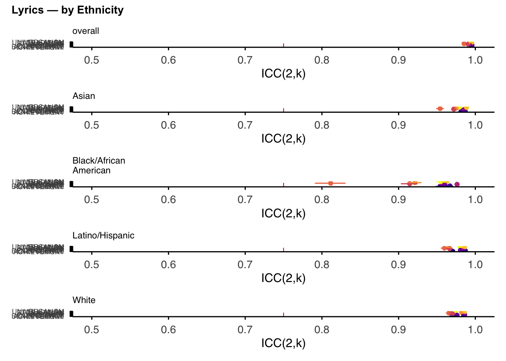
Code
ggsave(here("images", "main_lyrics_reliability_by_value_by_ethnicity.pdf"),
fig_lyrics_ethnicity, height = 6)Saving 7 x 6 in imageWarning in grid.Call.graphics(C_text, as.graphicsAnnot(x$label), x$x, x$y, :
for 'Lyrics — by Ethnicity' in 'mbcsToSbcs': - substituted for — (U+2014)Code
# speeches: ethnicity breakdowns
fig_speeches_ethnicity <- plot_icc_by_subset(
ethnicity_subsample_ICC_dfs[["speeches"]],
option = "D", title = "Speeches — by Ethnicity")
fig_speeches_ethnicityWarning: Removed 1 row containing missing values or values outside the scale range
(`geom_point()`).Warning: Removed 1 row containing missing values or values outside the scale range
(`geom_point()`).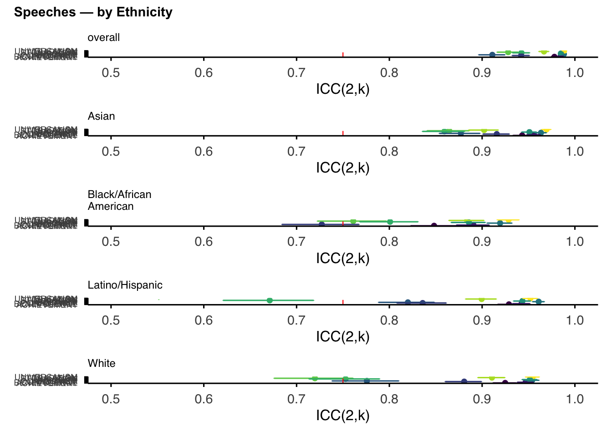
Code
ggsave(here("images", "main_speeches_reliability_by_value_by_ethnicity.pdf"),
fig_speeches_ethnicity, height = 6)Saving 7 x 6 in imageWarning: Removed 1 row containing missing values or values outside the scale range
(`geom_point()`).
Removed 1 row containing missing values or values outside the scale range
(`geom_point()`).Warning in grid.Call.graphics(C_text, as.graphicsAnnot(x$label), x$x, x$y, :
for 'Speeches — by Ethnicity' in 'mbcsToSbcs': - substituted for — (U+2014)Code
fig_speeches_spectrum <- plot_icc_by_subset(
spectrum_subsample_ICC_dfs,
option = "D", title = "Speeches — by Political Spectrum")
fig_speeches_spectrum
Code
ggsave(here("images", "main_speeches_reliability_by_value_by_spectrum.pdf"),
fig_speeches_spectrum, height = 6)Saving 7 x 6 in imageWarning in grid.Call.graphics(C_text, as.graphicsAnnot(x$label), x$x, x$y, :
for 'Speeches — by Political Spectrum' in 'mbcsToSbcs': - substituted for —
(U+2014)Multi-Dimensional Scaling
Results
Figure 8: MDS plots, prior vs. present studies
Code
p1 <- svs_mat |> mds_data() %>% plot_mds_df("SVS: Schwartz, 2001", "turbo")
p2 <- pvq_mat |> mds_data() %>% plot_mds_df("PVQ: Schwartz, 2001", "turbo")
p3 <- SSVS_df |>
select(all_of(values)) %>%
cor(use = "pairwise.complete.obs") %>%
mds_data() %>%
rotate_mds(degrees = 135) %>%
plot_mds_df("SSVS: Present Study", "turbo")
(p1 | p2 | p3) +
plot_annotation(tag_levels = "A") &
theme(plot.title = element_text(hjust = 0.5))
Code
#ggsave(here("images", "main_SSVS_self.pdf"), height = 5, width = 11)Figure 10: MDS plots, by text type
Code
p1 <- bind_rows(mean_dfs[[1]], mean_dfs[[2]]) %>%
select(all_of(values)) %>%
cor(use = "complete.obs") |>
mds_data() %>% rotate_mds(degrees = -45) %>%
plot_mds_df("Lyrics", "plasma")
p2 <- bind_rows(mean_dfs[[3]], mean_dfs[[4]]) %>%
select(all_of(values)) %>%
cor(use = "complete.obs") |>
mds_data() %>% rotate_mds(degrees = -85) %>%
plot_mds_df("Speeches", "D")
(p1 | p2) +
plot_annotation(tag_levels = "A") &
theme(plot.title = element_text(hjust = 0.5))
Code
#ggsave(here("images", "main_SSVS_text.pdf"))Preliminary analysis
Results
in-text: value differences by text type
Code
#text_mod <- lmer(rating ~ value * text + (1|item_ID) + (1|participant_ID), data = df, REML=T)
#saveRDS(text_mod, here(path, "wave_2_text_mod.RDS"))
text_mod <- readRDS(here(path, "wave_2_text_mod.RDS"))
anova <- anova(text_mod)
report(anova)Type 3 ANOVAs only give sensible and informative results when covariates
are mean-centered and factors are coded with orthogonal contrasts (such
as those produced by `contr.sum`, `contr.poly`, or `contr.helmert`, but
*not* by the default `contr.treatment`).The ANOVA suggests that:
- The main effect of value is statistically significant and small (F(9) =
697.36, p < .001; Eta2 (partial) = 0.03, 95% CI [0.03, 1.00])
- The main effect of text is statistically significant and medium (F(1) =
248.99, p < .001; Eta2 (partial) = 0.07, 95% CI [0.05, 1.00])
- The interaction between value and text is statistically significant and
medium (F(9) = 1684.68, p < .001; Eta2 (partial) = 0.07, 95% CI [0.07, 1.00])
Effect sizes were labelled following Field's (2013) recommendations.Appendix F
Table F1: values present by text type
Code
# presence_df <- df |>
# mutate(present = !is.na(rating))
#
# mod <- glmer(
# present ~ value * text + (1 | participant_ID) + (1 | item_ID),
# data = presence_df,family = binomial,
# control = glmerControl(
# optimizer = "bobyqa",
# optCtrl = list(maxfun = 2e5)))
#saveRDS(mod, here("_data", "_intermediary_data", "models", "wave_2_text_presence_mod.RDS"))
mod <- readRDS(here("_data", "_intermediary_data", "models", "wave_2_text_presence_mod.RDS"))
emm_probs <- emmeans(
mod, ~ text |value, type = "response") |> as.data.frame()
emm_contrasts <- emmeans(
mod,~ text | value, type = "response") |> pairs() |> as.data.frame()
apa_presence_table <- emm_probs |>
select(value, text, prob) |>
pivot_wider(names_from = text, values_from = prob) |>
left_join(
emm_contrasts |>
select(value, odds.ratio, z.ratio, SE, p.value),
by = "value") |>
mutate(
speeches = round(speeches, 3),
lyrics = round(lyrics, 3),
odds.ratio = round(odds.ratio, 2),
z.ratio = round(z.ratio, 2),
SE = round(SE, 3),
p.value = ifelse(p.value < .001, "< .001",
sprintf("%.3f", p.value)))
gt_presence <- apa_presence_table |>
gt(rowname_col = "value") |>
cols_label(
speeches = "Speeches",
lyrics = "Lyrics",
odds.ratio = md("*OR*"),
z.ratio = md("*z*"),
SE = md("*SE*"),
p.value = md("*p*")
) |>
tab_header(
title = "Predicted Probabilities of Value Presence by Text Type",
subtitle = "Mixed-effects logistic regression results"
) |>
fmt_markdown(columns = everything()) |>
opt_table_outline() |>
opt_all_caps() |>
tab_source_note(
source_note = md(
"Note. Values are predicted probabilities of presence. OR = odds ratio for speeches vs. lyrics. Pairwise comparisons were conducted using the normal approximation (Z-tests) as the degrees of freedom for the model error were infinite."))
gt_presence| Predicted Probabilities of Value Presence by Text Type | ||||||
|---|---|---|---|---|---|---|
| Mixed-effects logistic regression results | ||||||
| Lyrics | Speeches | OR | z | SE | p | |
| ACHIEVEMENT | 0.862 | 0.987 | 0.08 | -33.28 | 0.006 | < .001 |
| BENEVOLENCE | 0.87 | 0.971 | 0.2 | -22.73 | 0.014 | < .001 |
| CONFORMITY | 0.819 | 0.9 | 0.5 | -10.12 | 0.034 | < .001 |
| HEDONISM | 0.959 | 0.838 | 4.57 | 21.52 | 0.322 | < .001 |
| POWER | 0.841 | 0.977 | 0.13 | -28.85 | 0.009 | < .001 |
| SECURITY | 0.741 | 0.981 | 0.06 | -39.64 | 0.004 | < .001 |
| SELF | 0.938 | 0.948 | 0.83 | -2.63 | 0.059 | 0.008 |
| STIMULATION | 0.945 | 0.842 | 3.25 | 16.9 | 0.226 | < .001 |
| TRADITION | 0.824 | 0.937 | 0.31 | -16.82 | 0.022 | < .001 |
| UNIVERSALISM | 0.783 | 0.964 | 0.13 | -28.78 | 0.009 | < .001 |
| Note. Values are predicted probabilities of presence. OR = odds ratio for speeches vs. lyrics. Pairwise comparisons were conducted using the normal approximation (Z-tests) as the degrees of freedom for the model error were infinite. | ||||||
Code
gtsave(gt_presence, filename = here("tables", "main_value_presence_by_text.tex"))Table F2: value ratings by text type
Code
# turn into a table for appendix
emm <- emmeans(text_mod, ~ text | value, lmer.df = "asymptotic")
contrast_emm <- contrast(emm, method = "pairwise", by = "value", adjust = "bonferroni")
contrast_ci <- confint(contrast_emm, level = 0.95)
contrast_tbl <- merge(contrast_ci, contrast_emm|>as.data.frame())
contrast_tbl <- contrast_tbl |>
rename(
Value = value,
Comparison = contrast,
Estimate = estimate,
SE = SE,
DF = df,
`z-ratio` = z.ratio,
`p-value` = p.value,
`CI lower` = asymp.LCL,
`CI upper` = asymp.UCL) |>
mutate(`p-value` = sprintf("%.4f", `p-value`))
#contrast_tblCode
# Note: results are Lyrics - Speeches.
# Thus, a negative number indicates that
# the EMM for lyrics was lower than the EMM
# for speeches etc.
gt_contrast <- contrast_tbl |>
select(-Comparison) |>
gt() |>
tab_style(
style = cell_text(align = "center"),
locations = cells_row_groups()) |>
fmt_number(
columns = c(Estimate, SE, `z-ratio`, `CI lower`, `CI upper`),
decimals = 3)
gt_contrast| Value | Estimate | SE | DF | CI lower | CI upper | z-ratio | p-value |
|---|---|---|---|---|---|---|---|
| ACHIEVEMENT | −1.536 | 0.048 | Inf | −1.630 | −1.442 | −31.989 | 0.0000 |
| BENEVOLENCE | −0.985 | 0.048 | Inf | −1.079 | −0.890 | −20.447 | 0.0000 |
| CONFORMITY | −1.403 | 0.049 | Inf | −1.500 | −1.306 | −28.419 | 0.0000 |
| HEDONISM | 1.945 | 0.048 | Inf | 1.850 | 2.040 | 40.112 | 0.0000 |
| POWER | −0.987 | 0.048 | Inf | −1.082 | −0.892 | −20.404 | 0.0000 |
| SECURITY | −2.217 | 0.049 | Inf | −2.313 | −2.121 | −45.106 | 0.0000 |
| SELF | 0.171 | 0.048 | Inf | 0.077 | 0.264 | 3.582 | 0.0003 |
| STIMULATION | 1.050 | 0.049 | Inf | 0.954 | 1.145 | 21.572 | 0.0000 |
| TRADITION | −1.198 | 0.049 | Inf | −1.294 | −1.102 | −24.471 | 0.0000 |
| UNIVERSALISM | −0.958 | 0.049 | Inf | −1.054 | −0.862 | −19.545 | 0.0000 |
Code
gtsave(gt_contrast, here("tables", "main_emmeans_text_by_value.tex"))Figure F4: EMMs values by text type
Code
plot <- plot(emm) +
facet_wrap(~value, ncol = 2) +
ylab("Text Type") + xlab("Estimated Marginal Mean") +
theme_classic()Warning: `aes_()` was deprecated in ggplot2 3.0.0.
ℹ Please use tidy evaluation idioms with `aes()`
ℹ The deprecated feature was likely used in the emmeans package.
Please report the issue at <https://github.com/rvlenth/emmeans/issues>.Code
plot
Code
ggsave(here("images", "main_emmeans_text_by_value.PDF"), height = 5)Saving 7 x 5 in imageLyric model selection
Appendix G
models in multi-verse:
lyrics1: pre-registered model lyrics2: best fitting model
Code
# lyrics_mod_1 <- lmer(rating ~ value + Ethnicity * genre + (1|item_ID) + (1 | participant_ID),
# data = wave_2_dfs$wave_2_lyrics, REML = F)
#
# lyrics_mod_2 <- lmer(rating ~ value * Ethnicity * genre + (1|item_ID) + (1 | participant_ID),
# data = wave_2_dfs$wave_2_lyrics, REML = F)
#
# anova <- anova(lyrics_mod_1, lyrics_mod_2)
# anova
#saveRDS(anova, here(path, "wave_2_lyrics_mods_anova.RDS"))
anova <- readRDS(here(path, "wave_2_lyrics_mods_anova.RDS"))
anovaData: wave_2_dfs$wave_2_lyrics
Models:
lyrics_mod_1: rating ~ value + Ethnicity * genre + (1 | item_ID) + (1 | participant_ID)
lyrics_mod_2: rating ~ value * Ethnicity * genre + (1 | item_ID) + (1 | participant_ID)
npar AIC BIC logLik deviance Chisq Df
lyrics_mod_1 112 378205 379251 -188990 377981
lyrics_mod_2 1003 376208 385573 -187101 374202 3779 891
Pr(>Chisq)
lyrics_mod_1
lyrics_mod_2 < 0.00000000000000022 ***
---
Signif. codes: 0 '***' 0.001 '**' 0.01 '*' 0.05 '.' 0.1 ' ' 1Lyric model analysis
Results
ANOVA: lyrics model 1
Code
lyrics_mod_1 <- readRDS(here(path, "wave_2_lyrics_mod_1.RDS"))
anova <- readRDS(here(path, "wave_2_lyrics_mod_1_anova.RDS"))
anovaType III Analysis of Variance Table with Satterthwaite's method
Sum Sq Mean Sq NumDF DenDF F value Pr(>F)
value 40936 4548.5 9 82511 894.2281 < 0.00000000000000022 ***
Ethnicity 15 5.0 3 877 0.9787 0.402099
genre 316 13.2 24 797 2.5864 0.00005267 ***
Ethnicity:genre 544 7.6 72 81376 1.4845 0.004804 **
---
Signif. codes: 0 '***' 0.001 '**' 0.01 '*' 0.05 '.' 0.1 ' ' 1Code
eta_df <- readRDS(here(path, "wave_2_lyrics1_eta_df.RDS"))
tbl<- build_anova_gt(anova_obj=anova,eta_df=eta_df,title = "Type III ANOVA on model: lyrics1")
tbl| Type III ANOVA on model: lyrics1 | |||
|---|---|---|---|
| Effect | \(F\) | \(p\) | \(\eta^2_{partial}\) |
| Main Effects | |||
| value | F(9, 82511) = 894.23 | p < .0001 | 0.089 |
| Ethnicity | F(3, 877) = 0.98 | p = 0.402 | 0.003 |
| genre | F(24, 797) = 2.59 | p < .0001 | 0.072 |
| Two-Way Interactions | |||
| Ethnicity:genre | F(72, 81376) = 1.48 | p = 0.005 | 0.001 |
Code
gtsave(tbl, here("tables", "wave_2_lyrics_mod_1_anova.tex"))ANOVA: lyrics model 2
Code
lyrics_mod_2 <- readRDS(here(path, "wave_2_lyrics_mod_2.RDS"))
anova <- readRDS(here(path, "wave_2_lyrics_mod_2_anova.RDS"))
eta_df <- readRDS(here(path, "wave_2_lyrics2_eta_df.RDS"))
tbl<- build_anova_gt(anova_obj=anova,eta_df=eta_df,title = "Type III ANOVA on model: lyrics2")
tbl| Type III ANOVA on model: lyrics2 | |||
|---|---|---|---|
| Effect | \(F\) | \(p\) | \(\eta^2_{partial}\) |
| Main Effects | |||
| value | F(9, 81497) = 629.16 | p < .0001 | 0.065 |
| Ethnicity | F(3, 877) = 1.30 | p = 0.273 | 0.004 |
| genre | F(24, 782) = 2.97 | p < .0001 | 0.083 |
| Two-Way Interactions | |||
| value:Ethnicity | F(27, 81445) = 3.20 | p < .0001 | 0.001 |
| value:genre | F(216, 81488) = 13.83 | p < .0001 | 0.035 |
| Ethnicity:genre | F(72, 80596) = 1.63 | p < .001 | 0.001 |
| Three-Way Interactions | |||
| value:Ethnicity:genre | F(648, 81430) = 1.00 | p = 0.505 | 0.008 |
Code
gtsave(tbl, here("tables", "wave_2_lyrics_mod_2_anova.tex"))in-text: lyrics model 2 ethnicity by genre
Code
# emm <- emmeans(lyrics_mod_2, ~Ethnicity | genre)
# saveRDS(emm, here(path, "wave_2_lyrics2_emm_ethnicity_genre.RDS"))
emm <- readRDS(here(path, "wave_2_lyrics2_emm_ethnicity_genre.RDS"))
# contrasts <- emmeans::contrast(emm, "pairwise", adjust = "tukey") |>
# broom::tidy()
#
# contrasts <- merge(contrasts, genre_df, by= "genre")
# contrasts |> filter(adj.p.value < .05) |> select(contrast, estimate, adj.p.value, artist_topic_bin_labels)
# saveRDS(contrasts, here(path, "wave_2_lyrics2_contrasts_ethnicity_genre.RDS"))
contrasts <- readRDS(here(path, "wave_2_lyrics2_contrasts_ethnicity_genre.RDS"))
digits = 3
resid_sd <- sigma(lyrics_mod_2)
result <- contrasts |>
filter(adj.p.value < .05) |>
dplyr::mutate(
df = round(df, 1),
est = sprintf(paste0("%.", digits, "f"), estimate),
se = sprintf(paste0("%.", digits, "f"), std.error),
t = sprintf(paste0("%.", digits, "f"), statistic),
# APA p-value
p = dplyr::case_when(
adj.p.value < .001 ~ "< .001",
TRUE ~ sprintf("= %.3f", adj.p.value)),
# Cohen's d approximation
d = estimate / resid_sd,
d_fmt = sprintf("%.2f", d),
# Full APA sentence
apa = sprintf(
"[%s] %s: difference = %s, SE = %s, t(%s) = %s, p %s, d = %s.",
artist_topic_bin_labels, # 1
contrast, # 2
est, # 3
se, # 4
df, # 5
t, # 6
p, # 7
d_fmt # 8
)) |>
dplyr::pull(apa)
result[1] "[hip hop / rap / underground hip-hop / trap] Asian - (Black/African American): difference = -0.436, SE = 0.151, t(Inf) = -2.893, p = 0.020, d = -0.20."
[2] "[j-pop / ska / j-rock / rocksteady] Asian - White: difference = -0.488, SE = 0.173, t(Inf) = -2.822, p = 0.025, d = -0.22."
[3] "[indie rock / indie / indie pop / alternative] Asian - (Black/African American): difference = -0.424, SE = 0.129, t(Inf) = -3.287, p = 0.006, d = -0.19."in-text: lyrics model 2 ethnicity by value
Code
# emm <- emmeans(lyrics_mod_2, ~Ethnicity | value)
# saveRDS(emm, here(path, "wave_2_lyrics2_emm_ethnicity_value.RDS"))
emm <- readRDS(here(path, "wave_2_lyrics2_emm_ethnicity_value.RDS"))
# contrasts <- emmeans::contrast(emm, "pairwise", adjust = "tukey") |>
# broom::tidy()
# saveRDS(contrasts, here(path, "wave_2_lyrics2_contrasts_ethnicity_value.RDS"))
contrasts <- readRDS(here(path, "wave_2_lyrics2_contrasts_ethnicity_value.RDS"))
contrasts |>
#filter(adj.p.value < .05) |>
select(contrast, value, estimate, adj.p.value)# A tibble: 60 × 4
contrast value estimate adj.p.value
<chr> <chr> <dbl> <dbl>
1 Asian - (Black/African American) ACHIEVEMENT -2.09e-1 0.387
2 Asian - (Latino/Hispanic) ACHIEVEMENT -2.10e-1 0.363
3 Asian - White ACHIEVEMENT -1.61e-1 0.577
4 (Black/African American) - (Latino/Hispanic) ACHIEVEMENT -7.29e-4 1.00
5 (Black/African American) - White ACHIEVEMENT 4.83e-2 0.981
6 (Latino/Hispanic) - White ACHIEVEMENT 4.90e-2 0.979
7 Asian - (Black/African American) BENEVOLENCE -2.88e-1 0.126
8 Asian - (Latino/Hispanic) BENEVOLENCE -1.14e-1 0.809
9 Asian - White BENEVOLENCE -1.43e-1 0.667
10 (Black/African American) - (Latino/Hispanic) BENEVOLENCE 1.74e-1 0.533
# ℹ 50 more rowsCode
result <- contrasts |>
#filter(adj.p.value < .05) |>
dplyr::mutate(
df = round(df, 1),
est = sprintf(paste0("%.", digits, "f"), estimate),
se = sprintf(paste0("%.", digits, "f"), std.error),
t = sprintf(paste0("%.", digits, "f"), statistic),
# APA p-value
p = dplyr::case_when(
adj.p.value < .001 ~ "< .001",
TRUE ~ sprintf("= %.3f", adj.p.value)
),
# Cohen's d approximation
d = estimate / resid_sd,
d_fmt = sprintf("%.2f", d),
# NEW APA sentence grouped by value
apa = sprintf(
"[%s] %s: difference = %s, SE = %s, t(%s) = %s, p %s, d = %s.",
value, # 1 — the SCHWARTZ VALUE label
contrast, # 2 — ethnicity comparison
est, # 3
se, # 4
df, # 5
t, # 6
p, # 7
d_fmt # 8
)) |>
dplyr::pull(apa)
result [1] "[ACHIEVEMENT] Asian - (Black/African American): difference = -0.209, SE = 0.132, t(Inf) = -1.586, p = 0.387, d = -0.09."
[2] "[ACHIEVEMENT] Asian - (Latino/Hispanic): difference = -0.210, SE = 0.129, t(Inf) = -1.628, p = 0.363, d = -0.09."
[3] "[ACHIEVEMENT] Asian - White: difference = -0.161, SE = 0.126, t(Inf) = -1.278, p = 0.577, d = -0.07."
[4] "[ACHIEVEMENT] (Black/African American) - (Latino/Hispanic): difference = -0.001, SE = 0.130, t(Inf) = -0.006, p = 1.000, d = -0.00."
[5] "[ACHIEVEMENT] (Black/African American) - White: difference = 0.048, SE = 0.127, t(Inf) = 0.379, p = 0.981, d = 0.02."
[6] "[ACHIEVEMENT] (Latino/Hispanic) - White: difference = 0.049, SE = 0.124, t(Inf) = 0.394, p = 0.979, d = 0.02."
[7] "[BENEVOLENCE] Asian - (Black/African American): difference = -0.288, SE = 0.132, t(Inf) = -2.189, p = 0.126, d = -0.13."
[8] "[BENEVOLENCE] Asian - (Latino/Hispanic): difference = -0.114, SE = 0.128, t(Inf) = -0.892, p = 0.809, d = -0.05."
[9] "[BENEVOLENCE] Asian - White: difference = -0.143, SE = 0.126, t(Inf) = -1.136, p = 0.667, d = -0.06."
[10] "[BENEVOLENCE] (Black/African American) - (Latino/Hispanic): difference = 0.174, SE = 0.129, t(Inf) = 1.347, p = 0.533, d = 0.08."
[11] "[BENEVOLENCE] (Black/African American) - White: difference = 0.145, SE = 0.128, t(Inf) = 1.134, p = 0.669, d = 0.07."
[12] "[BENEVOLENCE] (Latino/Hispanic) - White: difference = -0.029, SE = 0.124, t(Inf) = -0.238, p = 0.995, d = -0.01."
[13] "[CONFORMITY] Asian - (Black/African American): difference = -0.610, SE = 0.133, t(Inf) = -4.576, p < .001, d = -0.28."
[14] "[CONFORMITY] Asian - (Latino/Hispanic): difference = -0.097, SE = 0.133, t(Inf) = -0.729, p = 0.885, d = -0.04."
[15] "[CONFORMITY] Asian - White: difference = -0.278, SE = 0.128, t(Inf) = -2.177, p = 0.130, d = -0.13."
[16] "[CONFORMITY] (Black/African American) - (Latino/Hispanic): difference = 0.513, SE = 0.135, t(Inf) = 3.789, p < .001, d = 0.23."
[17] "[CONFORMITY] (Black/African American) - White: difference = 0.332, SE = 0.130, t(Inf) = 2.552, p = 0.052, d = 0.15."
[18] "[CONFORMITY] (Latino/Hispanic) - White: difference = -0.181, SE = 0.130, t(Inf) = -1.393, p = 0.504, d = -0.08."
[19] "[HEDONISM] Asian - (Black/African American): difference = -0.019, SE = 0.125, t(Inf) = -0.149, p = 0.999, d = -0.01."
[20] "[HEDONISM] Asian - (Latino/Hispanic): difference = -0.234, SE = 0.119, t(Inf) = -1.957, p = 0.204, d = -0.11."
[21] "[HEDONISM] Asian - White: difference = 0.018, SE = 0.118, t(Inf) = 0.151, p = 0.999, d = 0.01."
[22] "[HEDONISM] (Black/African American) - (Latino/Hispanic): difference = -0.215, SE = 0.125, t(Inf) = -1.718, p = 0.314, d = -0.10."
[23] "[HEDONISM] (Black/African American) - White: difference = 0.036, SE = 0.124, t(Inf) = 0.294, p = 0.991, d = 0.02."
[24] "[HEDONISM] (Latino/Hispanic) - White: difference = 0.252, SE = 0.118, t(Inf) = 2.128, p = 0.144, d = 0.11."
[25] "[POWER] Asian - (Black/African American): difference = -0.115, SE = 0.132, t(Inf) = -0.877, p = 0.817, d = -0.05."
[26] "[POWER] Asian - (Latino/Hispanic): difference = 0.129, SE = 0.129, t(Inf) = 1.001, p = 0.749, d = 0.06."
[27] "[POWER] Asian - White: difference = 0.034, SE = 0.125, t(Inf) = 0.269, p = 0.993, d = 0.02."
[28] "[POWER] (Black/African American) - (Latino/Hispanic): difference = 0.245, SE = 0.132, t(Inf) = 1.848, p = 0.251, d = 0.11."
[29] "[POWER] (Black/African American) - White: difference = 0.149, SE = 0.129, t(Inf) = 1.158, p = 0.653, d = 0.07."
[30] "[POWER] (Latino/Hispanic) - White: difference = -0.096, SE = 0.126, t(Inf) = -0.758, p = 0.873, d = -0.04."
[31] "[SECURITY] Asian - (Black/African American): difference = -0.030, SE = 0.137, t(Inf) = -0.220, p = 0.996, d = -0.01."
[32] "[SECURITY] Asian - (Latino/Hispanic): difference = 0.165, SE = 0.139, t(Inf) = 1.190, p = 0.633, d = 0.07."
[33] "[SECURITY] Asian - White: difference = 0.038, SE = 0.132, t(Inf) = 0.289, p = 0.992, d = 0.02."
[34] "[SECURITY] (Black/African American) - (Latino/Hispanic): difference = 0.195, SE = 0.138, t(Inf) = 1.413, p = 0.491, d = 0.09."
[35] "[SECURITY] (Black/African American) - White: difference = 0.069, SE = 0.132, t(Inf) = 0.519, p = 0.955, d = 0.03."
[36] "[SECURITY] (Latino/Hispanic) - White: difference = -0.127, SE = 0.134, t(Inf) = -0.947, p = 0.780, d = -0.06."
[37] "[SELF] Asian - (Black/African American): difference = -0.037, SE = 0.127, t(Inf) = -0.291, p = 0.991, d = -0.02."
[38] "[SELF] Asian - (Latino/Hispanic): difference = -0.114, SE = 0.122, t(Inf) = -0.940, p = 0.783, d = -0.05."
[39] "[SELF] Asian - White: difference = -0.001, SE = 0.120, t(Inf) = -0.007, p = 1.000, d = -0.00."
[40] "[SELF] (Black/African American) - (Latino/Hispanic): difference = -0.077, SE = 0.127, t(Inf) = -0.610, p = 0.929, d = -0.03."
[41] "[SELF] (Black/African American) - White: difference = 0.036, SE = 0.125, t(Inf) = 0.287, p = 0.992, d = 0.02."
[42] "[SELF] (Latino/Hispanic) - White: difference = 0.113, SE = 0.120, t(Inf) = 0.943, p = 0.782, d = 0.05."
[43] "[STIMULATION] Asian - (Black/African American): difference = -0.136, SE = 0.125, t(Inf) = -1.088, p = 0.697, d = -0.06."
[44] "[STIMULATION] Asian - (Latino/Hispanic): difference = -0.102, SE = 0.120, t(Inf) = -0.844, p = 0.833, d = -0.05."
[45] "[STIMULATION] Asian - White: difference = -0.029, SE = 0.119, t(Inf) = -0.243, p = 0.995, d = -0.01."
[46] "[STIMULATION] (Black/African American) - (Latino/Hispanic): difference = 0.035, SE = 0.126, t(Inf) = 0.275, p = 0.993, d = 0.02."
[47] "[STIMULATION] (Black/African American) - White: difference = 0.108, SE = 0.125, t(Inf) = 0.861, p = 0.825, d = 0.05."
[48] "[STIMULATION] (Latino/Hispanic) - White: difference = 0.073, SE = 0.120, t(Inf) = 0.607, p = 0.930, d = 0.03."
[49] "[TRADITION] Asian - (Black/African American): difference = -0.465, SE = 0.133, t(Inf) = -3.496, p = 0.003, d = -0.21."
[50] "[TRADITION] Asian - (Latino/Hispanic): difference = -0.219, SE = 0.132, t(Inf) = -1.663, p = 0.343, d = -0.10."
[51] "[TRADITION] Asian - White: difference = -0.357, SE = 0.127, t(Inf) = -2.802, p = 0.026, d = -0.16."
[52] "[TRADITION] (Black/African American) - (Latino/Hispanic): difference = 0.246, SE = 0.134, t(Inf) = 1.844, p = 0.253, d = 0.11."
[53] "[TRADITION] (Black/African American) - White: difference = 0.108, SE = 0.129, t(Inf) = 0.837, p = 0.837, d = 0.05."
[54] "[TRADITION] (Latino/Hispanic) - White: difference = -0.138, SE = 0.128, t(Inf) = -1.079, p = 0.703, d = -0.06."
[55] "[UNIVERSALISM] Asian - (Black/African American): difference = -0.096, SE = 0.134, t(Inf) = -0.715, p = 0.891, d = -0.04."
[56] "[UNIVERSALISM] Asian - (Latino/Hispanic): difference = -0.113, SE = 0.132, t(Inf) = -0.852, p = 0.829, d = -0.05."
[57] "[UNIVERSALISM] Asian - White: difference = -0.061, SE = 0.130, t(Inf) = -0.469, p = 0.966, d = -0.03."
[58] "[UNIVERSALISM] (Black/African American) - (Latino/Hispanic): difference = -0.017, SE = 0.133, t(Inf) = -0.126, p = 0.999, d = -0.01."
[59] "[UNIVERSALISM] (Black/African American) - White: difference = 0.035, SE = 0.131, t(Inf) = 0.268, p = 0.993, d = 0.02."
[60] "[UNIVERSALISM] (Latino/Hispanic) - White: difference = 0.052, SE = 0.129, t(Inf) = 0.402, p = 0.978, d = 0.02." lyrics model 2: emm plot
Code
pdat <- plot(emm, comparisons = TRUE, plotit = FALSE)
labeller_value <- labeller(value = function(x) gsub("value: ", "", x))
pdat_l <- pdat |> filter(!is.na(lcmpl))
pdat_r <- pdat |> filter(!is.na(rcmpl))
ggplot(pdat, aes(x = the.emmean, y = Ethnicity)) +
geom_rect(aes(xmin = asymp.LCL, xmax = asymp.UCL,
ymin = as.numeric(Ethnicity) - 0.5,
ymax = as.numeric(Ethnicity) + 0.5,
fill = value),
alpha = 0.7) +
scale_fill_viridis_d(option = "magma") +
geom_segment(data = pdat_l,
aes(xend = lcmpl, yend = Ethnicity),
arrow = arrow(length = unit(0.15, "cm")), colour = "red") +
geom_segment(data = pdat_r,
aes(xend = rcmpl, yend = Ethnicity),
arrow = arrow(length = unit(0.15, "cm")), colour = "red") +
geom_point() +
facet_wrap(~ value, labeller = labeller_value, ncol = 2) +
theme_classic() + xlab("Estimated Marginal Mean") + ggtitle("Lyrics") +
theme(legend.position = "none") 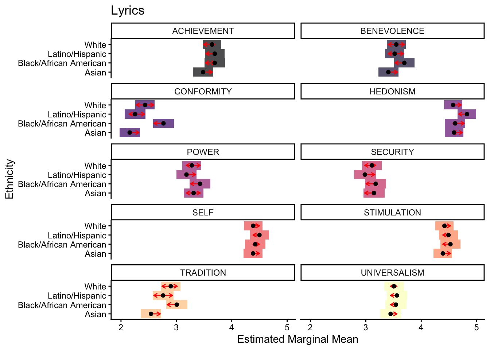
Code
ggsave(here("images", "main_emmeans_lyrics_by_ethnicity_value.pdf"))Saving 7 x 5 in imageSpeech model selection
Appendix G
models in multiverse
Models:
speeches_1a pre-registered, ethnicity annotator trait rating ~ value + Ethnicity * party speeches_1b pre-registered, spectrum annotator trait rating ~ value + spectrum * party speeches_2a best-fitting, ethnicity annotator trait rating ~ value * Ethnicity * party speeches_2b best-fitting, spectrum annotator trait rating ~ value * spectrum * party speeches_3a combined model, all three-way interactions (SELECTED) rating ~ (value + Ethnicity + spectrum + party)^3 speeches_3b combined model, full four-way interaction (REJECTED — four-way adds no fit) rating ~ value * Ethnicity * spectrum * party
Both combined models converge. speeches_3a is selected on parsimony: the four-way interaction in speeches_3b provides no improvement in fit (LRT p = .748, ΔAIC = +61.3 against speeches_3a).
Model comparison table
Three sections:
- Ethnicity Models: speeches_2a tested against speeches_1a (sequential LRT).
- Spectrum Models: speeches_2b tested against speeches_1b (sequential LRT).
- Combined Model: speeches_3a tested against BOTH best-fitting models (vs speeches_2a and vs speeches_2b — shown as separate rows, since these are different nested comparisons), then speeches_3b tested against speeches_3a to show the four-way interaction adds no fit.
ΔAIC in each row is relative to the model that row is tested against.
Code
# --- Ethnicity group: 1a -> 2a ---
eth_rows <- bind_rows(
bind_cols(
model_fit_row(speeches_1a, "speeches_1a"),
tibble::tibble(Delta_AIC = NA_real_, LRT_chisq = NA_real_, LRT_df = NA_real_, LRT_p = NA_character_),
tibble::tibble(Tested_against = NA_character_)),
bind_cols(
model_fit_row(speeches_2a, "speeches_2a"),
tibble::tibble(Delta_AIC = AIC(speeches_2a) - AIC(speeches_1a)),
lrt_row(speeches_1a, speeches_2a),
tibble::tibble(Tested_against = "speeches_1a"))) |>
mutate(Group = "Ethnicity Models")
# --- Spectrum group: 1b -> 2b ---
spec_rows <- bind_rows(
bind_cols(
model_fit_row(speeches_1b, "speeches_1b"),
tibble::tibble(Delta_AIC = NA_real_, LRT_chisq = NA_real_, LRT_df = NA_real_, LRT_p = NA_character_),
tibble::tibble(Tested_against = NA_character_)),
bind_cols(
model_fit_row(speeches_2b, "speeches_2b"),
tibble::tibble(Delta_AIC = AIC(speeches_2b) - AIC(speeches_1b)),
lrt_row(speeches_1b, speeches_2b),
tibble::tibble(Tested_against = "speeches_1b"))) |>
mutate(Group = "Spectrum Models")
# --- Combined section: 3a vs 2a, 3a vs 2b, 3b vs 3a ---
combined_rows <- bind_rows(
bind_cols(
model_fit_row(speeches_3a, "speeches_3a"),
tibble::tibble(Delta_AIC = AIC(speeches_3a) - AIC(speeches_2a)),
lrt_row(speeches_2a, speeches_3a),
tibble::tibble(Tested_against = "speeches_2a")),
bind_cols(
model_fit_row(speeches_3a, "speeches_3a"),
tibble::tibble(Delta_AIC = AIC(speeches_3a) - AIC(speeches_2b)),
lrt_row(speeches_2b, speeches_3a),
tibble::tibble(Tested_against = "speeches_2b")),
bind_cols(
model_fit_row(speeches_3b, "speeches_3b"),
tibble::tibble(Delta_AIC = AIC(speeches_3b) - AIC(speeches_3a)),
lrt_row(speeches_3a, speeches_3b),
tibble::tibble(Tested_against = "speeches_3a"))) |>
mutate(Group = "Combined Model")
comparison_data <- bind_rows(eth_rows, spec_rows, combined_rows) |>
select(Group, Model, Tested_against, AIC, Delta_AIC,
R2_marginal, R2_conditional, LRT_chisq, LRT_df, LRT_p)
speech_tbl <- comparison_data |>
gt(groupname_col = "Group") |>
cols_label(
Model = "Model",
Tested_against = "vs.",
AIC = "AIC",
Delta_AIC = html("$\\Delta$AIC"),
R2_marginal = html("$R^2_m$"),
R2_conditional = html("$R^2_c$"),
LRT_chisq = html("$\\chi^2$"),
LRT_df = html("df"),
LRT_p = html("p")) |>
fmt_number(
columns = c(AIC, Delta_AIC, R2_marginal, R2_conditional, LRT_chisq),
decimals = 3) |>
sub_missing(columns = everything(), missing_text = "—") |>
tab_style(
style = cell_text(align = "center"),
locations = cells_row_groups()) |>
tab_header(
title = "Model Comparisons: Ethnicity and Political Spectrum",
subtitle = "Best-fitting and combined models tested by likelihood ratio against nested references") |>
tab_source_note(
source_note = paste0(
"χ², df, and p are likelihood ratio tests of each model against the model named in the ",
"'vs.' column; ΔAIC is relative to that same reference. speeches_3a is shown twice in the ",
"Combined section because it is tested against both best-fitting models (speeches_2a and ",
"speeches_2b); it improves on both. speeches_3b (full four-way interaction) adds no fit over ",
"speeches_3a, so speeches_3a is selected on parsimony. Both combined models converge."))
speech_tbl| Model Comparisons: Ethnicity and Political Spectrum | ||||||||
|---|---|---|---|---|---|---|---|---|
| Best-fitting and combined models tested by likelihood ratio against nested references | ||||||||
| Model | vs. | AIC | $\Delta$AIC | $R^2_m$ | $R^2_c$ | $\chi^2$ | df | p |
| Ethnicity Models | ||||||||
| speeches_1a | — | 446,457.951 | — | 0.106 | 0.272 | — | — | — |
| speeches_2a | speeches_1a | 446,076.512 | −381.439 | 0.109 | 0.276 | 507.439 | 63 | < .0001 |
| Spectrum Models | ||||||||
| speeches_1b | — | 446,489.156 | — | 0.103 | 0.272 | — | — | — |
| speeches_2b | speeches_1b | 446,137.122 | −352.034 | 0.106 | 0.275 | 442.034 | 45 | < .0001 |
| Combined Model | ||||||||
| speeches_3a | speeches_2a | 445,929.779 | −146.734 | 0.115 | 0.278 | 358.734 | 106 | < .0001 |
| speeches_3a | speeches_2b | 445,929.779 | −207.343 | 0.115 | 0.278 | 459.343 | 126 | < .0001 |
| speeches_3b | speeches_3a | 445,991.053 | 61.274 | 0.116 | 0.278 | 46.726 | 54 | = 0.748 |
| χ², df, and p are likelihood ratio tests of each model against the model named in the 'vs.' column; ΔAIC is relative to that same reference. speeches_3a is shown twice in the Combined section because it is tested against both best-fitting models (speeches_2a and speeches_2b); it improves on both. speeches_3b (full four-way interaction) adds no fit over speeches_3a, so speeches_3a is selected on parsimony. Both combined models converge. | ||||||||
Code
gtsave(speech_tbl, here("tables", "main_speech_model_comparisons.tex"))Model specification table
Code
all_specs <- bind_rows(
tibble(
Group = "Ethnicity Models",
Model = c("speeches_1a", "speeches_2a"),
Specification = purrr::map(list(speeches_1a, speeches_2a), extract_spec_pretty)),
tibble(
Group = "Spectrum Models",
Model = c("speeches_1b", "speeches_2b"),
Specification = purrr::map(list(speeches_1b, speeches_2b), extract_spec_pretty)),
tibble(
Group = "Combined Models",
Model = c("speeches_3a", "speeches_3b"),
Specification = purrr::map(list(speeches_3a, speeches_3b), extract_spec_pretty)))
gt_specs <- all_specs |>
gt(groupname_col = "Group") |>
cols_width(
Model ~ px(220),
Specification ~ px(400)) |>
cols_align("left", columns = Specification) |>
tab_style(
style = cell_text(weight = "bold", align = "center"),
locations = cells_row_groups()) |>
tab_header(title = "Model Specifications")
gt_specs| Model Specifications | |
|---|---|
| Model | Specification |
| Ethnicity Models | |
| speeches_1a | rating ~ value + Ethnicity * party + (1 | item_ID) + (1 | participant_ID) |
| speeches_2a | rating ~ value * Ethnicity * party + (1 | item_ID) + (1 | participant_ID) |
| Spectrum Models | |
| speeches_1b | rating ~ value + spectrum * party + (1 | item_ID) + (1 | participant_ID) |
| speeches_2b | rating ~ value * spectrum * party + (1 | item_ID) + (1 | participant_ID) |
| Combined Models | |
| speeches_3a | rating ~ (value + Ethnicity + spectrum + party)^3 + (1 | item_ID) + (1 | participant_ID) |
| speeches_3b | rating ~ value * Ethnicity * spectrum * party + (1 | item_ID) + (1 | participant_ID) |
Code
gtsave(gt_specs, here("tables", "main_speech_model_specifications.tex"))Final model Parameter Estimates
Code
# Refit the selected model with REML = TRUE for estimation, and save the ANOVA
# and partial eta-squared. These three objects are read by the analysis notebook
# (5_speech_model_analysis) under exactly these filenames.
#selected_mod <- update(selected_mod, REML = TRUE)
#saveRDS(selected_mod, here(path, "wave_2_speeches_mod_3b_REML.RDS"))
selected_mod <- readRDS(here(path, "wave_2_speeches_mod_3b_REML.RDS"))
# anova_selected <- anova(selected_mod, type = "III")
# saveRDS(anova_selected, here(path, "wave_2_speeches_mod_3b_REML_anova.RDS"))
anova_selected <- readRDS(here(path, "wave_2_speeches_mod_3b_REML_anova.RDS"))
anova_selectedType III Analysis of Variance Table with Satterthwaite's method
Sum Sq Mean Sq NumDF DenDF F value
value 53845 5982.8 9 104917 1586.2507
Ethnicity 108 35.9 3 914 9.5291
spectrum 40 20.2 2 914 5.3610
party 26 25.7 1 299 6.8243
value:Ethnicity 764 28.3 27 104900 7.5004
value:spectrum 443 24.6 18 104901 6.5233
value:party 984 109.4 9 104872 28.9959
Ethnicity:spectrum 43 7.1 6 914 1.8794
Ethnicity:party 133 44.5 3 104913 11.7898
spectrum:party 52 26.1 2 104447 6.9289
value:Ethnicity:spectrum 529 9.8 54 104900 2.5984
value:Ethnicity:party 130 4.8 27 104857 1.2722
value:spectrum:party 214 11.9 18 104857 3.1576
Ethnicity:spectrum:party 40 6.7 6 104344 1.7877
Pr(>F)
value < 0.00000000000000022 ***
Ethnicity 0.00000335433 ***
spectrum 0.0048450 **
party 0.0094475 **
value:Ethnicity < 0.00000000000000022 ***
value:spectrum < 0.00000000000000022 ***
value:party < 0.00000000000000022 ***
Ethnicity:spectrum 0.0814687 .
Ethnicity:party 0.00000010208 ***
spectrum:party 0.0009796 ***
value:Ethnicity:spectrum 0.00000000134 ***
value:Ethnicity:party 0.1561942
value:spectrum:party 0.00000659717 ***
Ethnicity:spectrum:party 0.0972347 .
---
Signif. codes: 0 '***' 0.001 '**' 0.01 '*' 0.05 '.' 0.1 ' ' 1Code
# eta_df <- eta_squared(selected_mod, partial = TRUE, ci = 0.95)
# eta_df <- eta_df |>
# select(Parameter, Eta2_partial, CI_low, CI_high) |>
# rename(Effect = Parameter)
# saveRDS(eta_df, here(path, "wave_2_speeches_mod_3b_REML_eta.RDS"))
eta_df <- readRDS(here(path, "wave_2_speeches_mod_3b_REML_eta.RDS"))
eta_df# Effect Size for ANOVA
Effect | Eta2 (partial) | CI
--------------------------------------------------------
value | 0.12 | [0.12, 1.00]
Ethnicity | 0.03 | [0.01, 1.00]
spectrum | 0.01 | [0.00, 1.00]
party | 0.02 | [0.00, 1.00]
value:Ethnicity | 1.93e-03 | [0.00, 1.00]
value:spectrum | 1.12e-03 | [0.00, 1.00]
value:party | 2.48e-03 | [0.00, 1.00]
Ethnicity:spectrum | 0.01 | [0.00, 1.00]
Ethnicity:party | 3.37e-04 | [0.00, 1.00]
spectrum:party | 1.33e-04 | [0.00, 1.00]
value:Ethnicity:spectrum | 1.34e-03 | [0.00, 1.00]
value:Ethnicity:party | 3.27e-04 | [0.00, 1.00]
value:spectrum:party | 5.42e-04 | [0.00, 1.00]
Ethnicity:spectrum:party | 1.03e-04 | [0.00, 1.00]Speech model analysis
Results
table: subgroup deviation from overall sample
Code
# Mean rating per speech x value, for overall sample
overall_item_profile <- speeches_dfs |>
filter(!is.na(rating)) |>
group_by(item_ID, value) |>
summarise(overall_mean = mean(rating, na.rm = TRUE), .groups = "drop")
# Mean rating per speech x value, per subgroup
subgroup_item_profiles <- speeches_dfs |>
filter(!is.na(rating)) |>
group_by(Ethnicity, spectrum, item_ID, value) |>
summarise(subgroup_mean = mean(rating, na.rm = TRUE), .groups = "drop")
# Join and correlate across item x value combinations
subgroup_summary <- subgroup_item_profiles |>
left_join(overall_item_profile, by = c("item_ID", "value")) |>
group_by(Ethnicity, spectrum) |>
summarise(
n_obs = n(),
MAD = mean(abs(subgroup_mean - overall_mean)),
r_pearson = cor(subgroup_mean, overall_mean),
r_spearman = cor(subgroup_mean, overall_mean, method = "spearman"),
.groups = "drop"
) |>
arrange(desc(MAD))
gt_subgroup <- subgroup_summary |>
gt() |>
cols_label(
Ethnicity = "Ethnicity",
spectrum = "Political Spectrum",
n_obs = md("*n* cells"),
MAD = md("MAD"),
r_pearson = md("*r* (Pearson)"),
r_spearman = md("*r* (Spearman)")
) |>
fmt_number(columns = c(MAD, r_pearson, r_spearman), decimals = 3) |>
tab_header(
title = "Subgroup Deviation from Overall Sample Value Profiles",
subtitle = "Mean Absolute Deviation and profile correlations per Ethnicity × Political Spectrum subgroup"
) |>
tab_footnote(
footnote = "MAD = mean absolute deviation from overall sample mean per value (rating scale units).
Pearson r and Spearman ρ reflect agreement between subgroup and overall value profiles.",
locations = cells_column_labels(columns = MAD)
) |>
cols_align("center", columns = c(n_obs, MAD, r_pearson, r_spearman)) |>
tab_options(table.font.size = 12, data_row.padding = px(4))
gt_subgroup| Subgroup Deviation from Overall Sample Value Profiles | |||||
|---|---|---|---|---|---|
| Mean Absolute Deviation and profile correlations per Ethnicity × Political Spectrum subgroup | |||||
| Ethnicity | Political Spectrum | n cells | MAD1 | r (Pearson) | r (Spearman) |
| Asian | Conservative | 2673 | 1.160 | 0.536 | 0.521 |
| Black/African American | Conservative | 2910 | 1.123 | 0.498 | 0.497 |
| Asian | Liberal | 2834 | 1.121 | 0.647 | 0.644 |
| Black/African American | Moderate | 2826 | 1.117 | 0.519 | 0.517 |
| Latino/Hispanic | Moderate | 2859 | 1.111 | 0.541 | 0.545 |
| Latino/Hispanic | Conservative | 2793 | 1.066 | 0.493 | 0.494 |
| Latino/Hispanic | Liberal | 2873 | 1.062 | 0.620 | 0.622 |
| Black/African American | Liberal | 2912 | 1.047 | 0.569 | 0.575 |
| Asian | Moderate | 2832 | 1.044 | 0.595 | 0.595 |
| White | Moderate | 2933 | 1.021 | 0.606 | 0.609 |
| White | Liberal | 2869 | 1.013 | 0.628 | 0.621 |
| White | Conservative | 2904 | 0.994 | 0.581 | 0.572 |
| 1 MAD = mean absolute deviation from overall sample mean per value (rating scale units). Pearson r and Spearman ρ reflect agreement between subgroup and overall value profiles. | |||||
Code
gtsave(gt_subgroup, here("tables", "wave_2_speeches_subgroup_deviation.tex"))Appendix G
Table 10 — Pre-registered models (speeches1a, speeches1b)
Type III ANOVAs for the two pre-registered models. These feed the hand-merged Table 10 comparator (main_speeches_mod_1a_1b_anova.tex).
Code
# Pre-registered models (ethnicity and spectrum) — feed the Table 10 merge
speeches_a_mods <- readRDS(here(path, "speeches_a_mods.RDS"))
speeches_b_mods <- readRDS(here(path, "speeches_b_mods.RDS"))
speeches1a_mod <- speeches_a_mods[["speeches1a_mod"]]
anova_1a <- anova(speeches1a_mod)
eta_1a <- eta_squared(speeches1a_mod, partial = TRUE, ci = 0.95) |>
select(Parameter, Eta2_partial, CI_low, CI_high) |>
rename(Effect = Parameter)
tbl_1a <- build_anova_gt(anova_1a, eta_1a, title = "Type III ANOVA: speeches_1a (pre-registered, ethnicity)")
tbl_1a| Type III ANOVA: speeches_1a (pre-registered, ethnicity) | |||
|---|---|---|---|
| Effect | \(F\) | \(p\) | \(\eta^2_{partial}\) |
| Main Effects | |||
| value | F(9, 105088) = 1605.64 | p < .0001 | 0.121 |
| Ethnicity | F(3, 924) = 8.59 | p < .0001 | 0.027 |
| party | F(1, 295) = 6.94 | p = 0.009 | 0.023 |
| Two-Way Interactions | |||
| Ethnicity:party | F(3, 105040) = 11.52 | p < .0001 | 0.000 |
Code
gtsave(tbl_1a, here("tables", "wave_2_speeches_mod_1a_anova.tex"))Code
speeches1b_mod <- speeches_b_mods[["speeches1b_mod"]]
anova_1b <- anova(speeches1b_mod)
eta_1b <- eta_squared(speeches1b_mod, partial = TRUE, ci = 0.95) |>
select(Parameter, Eta2_partial, CI_low, CI_high) |>
rename(Effect = Parameter)
tbl_1b <- build_anova_gt(anova_1b, eta_1b, title = "Type III ANOVA: speeches_1b (pre-registered, spectrum)")
tbl_1b| Type III ANOVA: speeches_1b (pre-registered, spectrum) | |||
|---|---|---|---|
| Effect | \(F\) | \(p\) | \(\eta^2_{partial}\) |
| Main Effects | |||
| value | F(9, 105088) = 1605.08 | p < .0001 | 0.121 |
| spectrum | F(2, 925) = 5.29 | p = 0.005 | 0.011 |
| party | F(1, 294) = 6.10 | p = 0.014 | 0.020 |
| Two-Way Interactions | |||
| spectrum:party | F(2, 104508) = 7.11 | p < .001 | 0.000 |
Code
gtsave(tbl_1b, here("tables", "wave_2_speeches_mod_1b_anova.tex"))Table 7 — Speeches ANOVA (selected combined model)
Type III ANOVA and partial η² for the selected rung-2 combined model (speeches_3a). Reads cached objects from the model-selection notebook.
Code
anova_selected <- readRDS(here(path, "wave_2_speeches_combined_mod_anova.RDS"))
eta_selected <- readRDS(here(path, "wave_2_speeches_combined_mod_eta.RDS"))
tbl_selected <- build_anova_gt(anova_selected, eta_selected,
title = "Type III ANOVA: speeches_3a (selected combined model)")
tbl_selected| Type III ANOVA: speeches_3a (selected combined model) | |||
|---|---|---|---|
| Effect | \(F\) | \(p\) | \(\eta^2_{partial}\) |
| Main Effects | |||
| value | F(9, 104917) = 1586.25 | p < .0001 | 0.120 |
| Ethnicity | F(3, 914) = 9.53 | p < .0001 | 0.030 |
| spectrum | F(2, 914) = 5.36 | p = 0.005 | 0.012 |
| party | F(1, 299) = 6.82 | p = 0.009 | 0.022 |
| Two-Way Interactions | |||
| value:Ethnicity | F(27, 104900) = 7.50 | p < .0001 | 0.002 |
| value:spectrum | F(18, 104901) = 6.52 | p < .0001 | 0.001 |
| value:party | F(9, 104872) = 29.00 | p < .0001 | 0.002 |
| Ethnicity:spectrum | F(6, 914) = 1.88 | p = 0.081 | 0.012 |
| Ethnicity:party | F(3, 104913) = 11.79 | p < .0001 | 0.000 |
| spectrum:party | F(2, 104447) = 6.93 | p < .001 | 0.000 |
| Three-Way Interactions | |||
| value:Ethnicity:spectrum | F(54, 104900) = 2.60 | p < .0001 | 0.001 |
| value:Ethnicity:party | F(27, 104857) = 1.27 | p = 0.156 | 0.000 |
| value:spectrum:party | F(18, 104857) = 3.16 | p < .0001 | 0.001 |
| Ethnicity:spectrum:party | F(6, 104344) = 1.79 | p = 0.097 | 0.000 |
Code
gtsave(tbl_selected, here("tables", "wave_2_speeches_mod_4_anova.tex"))in-text: speeches model main effects
Code
apa_emm_pairs(selected_mod, specs = ~ Ethnicity, total_sd = total_sd)NOTE: Results may be misleading due to involvement in interactions[1] "Asian - (Black/African American): difference = -0.43, SE = 0.09, z = -4.80, p < .001, d = -0.46."
[2] "Asian - (Latino/Hispanic): difference = -0.11, SE = 0.09, z = -1.27, p = 0.584, d = -0.12."
[3] "Asian - White: difference = -0.06, SE = 0.09, z = -0.73, p = 0.884, d = -0.07."
[4] "(Black/African American) - (Latino/Hispanic): difference = 0.31, SE = 0.09, z = 3.63, p = 0.002, d = 0.34."
[5] "(Black/African American) - White: difference = 0.36, SE = 0.08, z = 4.27, p < .001, d = 0.39."
[6] "(Latino/Hispanic) - White: difference = 0.05, SE = 0.09, z = 0.57, p = 0.940, d = 0.05." Code
apa_emm_pairs(selected_mod, specs = ~ spectrum, total_sd = total_sd)NOTE: Results may be misleading due to involvement in interactions[1] "Conservative - Liberal: difference = 0.25, SE = 0.08, z = 3.26, p = 0.003, d = 0.27."
[2] "Conservative - Moderate: difference = 0.11, SE = 0.08, z = 1.45, p = 0.315, d = 0.12."
[3] "Liberal - Moderate: difference = -0.14, SE = 0.07, z = -1.84, p = 0.156, d = -0.15." Figure 13: EMM by ethnicity and political spectrum
Two panels: ethnicity contrasts within spectrum (A), spectrum contrasts within ethnicity (B). (Chunk currently disabled — re-enable to produce the figure.)
Code
p_A <- plot(emmeans(selected_mod, ~ Ethnicity | spectrum), comparisons = TRUE) +
facet_wrap(~spectrum, ncol = 1) +
ylab("Ethnicity") + xlab("Estimated Marginal Mean") +
theme_classic()Note: D.f. calculations have been disabled because the number of observations exceeds 3000.
To enable adjustments, add the argument 'pbkrtest.limit = 106210' (or larger)
[or, globally, 'set emm_options(pbkrtest.limit = 106210)' or larger];
but be warned that this may result in large computation time and memory use.Note: D.f. calculations have been disabled because the number of observations exceeds 3000.
To enable adjustments, add the argument 'lmerTest.limit = 106210' (or larger)
[or, globally, 'set emm_options(lmerTest.limit = 106210)' or larger];
but be warned that this may result in large computation time and memory use.NOTE: Results may be misleading due to involvement in interactionsCode
p_B <- plot(emmeans(selected_mod, ~ spectrum | Ethnicity), comparisons = TRUE) +
facet_wrap(~Ethnicity, ncol = 1) +
ylab("Political Spectrum") + xlab("Estimated Marginal Mean") +
theme_classic()Note: D.f. calculations have been disabled because the number of observations exceeds 3000.
To enable adjustments, add the argument 'pbkrtest.limit = 106210' (or larger)
[or, globally, 'set emm_options(pbkrtest.limit = 106210)' or larger];
but be warned that this may result in large computation time and memory use.Note: D.f. calculations have been disabled because the number of observations exceeds 3000.
To enable adjustments, add the argument 'lmerTest.limit = 106210' (or larger)
[or, globally, 'set emm_options(lmerTest.limit = 106210)' or larger];
but be warned that this may result in large computation time and memory use.NOTE: Results may be misleading due to involvement in interactionsCode
(p_A | p_B) + plot_annotation(tag_levels = "A")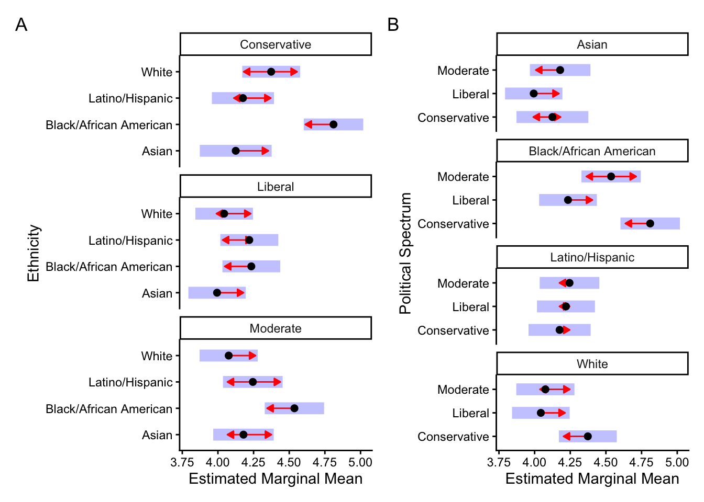
Code
# ggsave(here("images", "main_emmeans_speeches_by_ethnicity_spectrum.pdf"))Figure 15: EMM by ethnicity by political spectrum
Code
emm <- emmeans(selected_mod, ~ spectrum | Ethnicity, lmer.df = "asymptotic")NOTE: Results may be misleading due to involvement in interactionsCode
pdat <- plot(emm, comparisons = TRUE, plotit = FALSE)
pdat_l <- pdat |> filter(!is.na(lcmpl))
pdat_r <- pdat |> filter(!is.na(rcmpl))
ggplot(pdat, aes(x = the.emmean, y = spectrum)) +
geom_rect(aes(xmin = asymp.LCL, xmax = asymp.UCL,
ymin = as.numeric(spectrum) - 0.5,
ymax = as.numeric(spectrum) + 0.5,
fill = Ethnicity),
alpha = 0.6) +
scale_fill_viridis_d(option = "D") +
geom_segment(data = pdat_l,
aes(xend = lcmpl, yend = spectrum),
arrow = arrow(length = unit(0.15, "cm")), colour = "red") +
geom_segment(data = pdat_r,
aes(xend = rcmpl, yend = spectrum),
arrow = arrow(length = unit(0.15, "cm")), colour = "red") +
geom_point() +
coord_cartesian(xlim = c(2, 5)) +
facet_wrap(~ Ethnicity, ncol = 1) +
theme_classic() + xlab("Estimated Marginal Mean") + ylab("Political Spectrum") +
theme(legend.position = "none")
Code
ggsave(here("images", "main_emmeans_spectrum_ethnicity_by_party.pdf"))Saving 7 x 5 in imageGrounding
Code
library("here") # file logistics
library("tidyverse") # code logistics
library("emmeans") # estimated marginal means
library("RobustRankAggreg") # rank aggregation
Attaching package: 'RobustRankAggreg'The following object is masked from 'package:Matrix':
rankMatrixCode
library("patchwork") # merge plots
library("gt") # latex tables
library("viridis") # colors
options(scipen = 999)RRA
Descriptives
Table: Value Agreement in lyrics by genre
Code
lyrics_agreement_per_item_genre <- rra_lyrics |>
group_by(artist_topic_bin_labels, item_ID) |>
summarise(
n_values_identified = sum(agree),
.groups = "drop")
lyrics_agreement_dist_genre <- lyrics_agreement_per_item_genre |>
group_by(artist_topic_bin_labels, n_values_identified) |>
summarise(n = n(), .groups = "drop") |>
group_by(artist_topic_bin_labels) |>
mutate(prop = n / sum(n)) |>
group_by(artist_topic_bin_labels) |>
summarise(
median_identified = median(n_values_identified),
.groups = "drop") |>
arrange(desc(median_identified))
gt_lyrics_agreement <- lyrics_agreement_dist_genre |>
gt(rowname_col = "artist_topic_bin_labels") |>
cols_label(median_identified = "Median number of values identified") |>
fmt_number(
columns = median_identified,
decimals = 1) |>
tab_header(
title = "Value Agreement in Lyrics by Genre") |>
tab_source_note(
source_note = "Note. Values indicate the median number of values consistently identified by robust rank aggregation (RRA) per song.")
gt_lyrics_agreement| Value Agreement in Lyrics by Genre | |
|---|---|
| Median number of values identified | |
| hardcore punk / hardcore / punk rock / deathcore | 3.5 |
| electronic / ebm / industrial / electronica | 3.0 |
| christian / worship / gospel / ccm | 2.5 |
| comedy / afrobeats / african / doo-wop | 2.5 |
| eurodance / dance / trance / electronic | 2.5 |
| hip hop / rap / underground hip-hop / trap | 2.5 |
| indie rock / indie / indie pop / alternative | 2.5 |
| metal / power metal / heavy metal / speed metal | 2.5 |
| punk rock / pop punk / hardcore punk / ska punk | 2.5 |
| sufi / gothic rock / darkwave / indian | 2.5 |
| swedish / swedish pop / blues rock / nordic | 2.5 |
| big band / jazz / vocal jazz / swing | 2.0 |
| blues / blues rock / classic blues / black metal | 2.0 |
| classic country / country / honky tonk / traditional country | 2.0 |
| j-pop / ska / j-rock / rocksteady | 2.0 |
| musicals / broadway / showtunes / shady | 2.0 |
| pop / female vocalists / chanson / eurovision | 2.0 |
| reggae / roots reggae / dancehall / ragga | 2.0 |
| rock / psychedelic rock / k-pop / progressive rock | 2.0 |
| rock n roll / rockabilly / r&b / new jack swing | 2.0 |
| soul / funk / r&b / motown | 2.0 |
| synthpop / new wave / post-punk / dubstep | 2.0 |
| classical / drum and bass / choral / piano | 1.5 |
| folk / singer-songwriter / folk rock / acoustic | 1.5 |
| italian / latin / italian singer-songwriter / latino | 1.5 |
| Note. Values indicate the median number of values consistently identified by robust rank aggregation (RRA) per song. | |
Code
gtsave(gt_lyrics_agreement, filename = here("tables", "main_lyrics_RRA_by_genre.tex"))Figure: Values by genre
Code
magma_col <- viridis(10, option = "magma")
value_order <- lyric_genre_rra_df |>
group_by(value) |>
summarize(mean_salience = mean(salience)) |>
arrange(desc(mean_salience)) |>
pull(value)
lyric_genre_rra_df |>
mutate(value = factor(value, levels = value_order)) |>
mutate(
salience_dir = case_when(
salience > 0 ~ "Top",
salience < 0 ~ "Bottom",
TRUE ~ NA_character_)) |>
ggplot(aes(x = artist_topic_bin_labels, y = value, fill = salience_dir)) +
geom_tile(color = "white", linewidth = 0.3) +
scale_fill_manual(
values = c(
"Bottom" = magma_col[3],
"Top" = magma_col[6]),
breaks = c("Top", "Bottom"),
name = "Rank Placement") +
labs(x = "Genre", y = "Value", title = "Salient Values by Genre") +
theme_classic() +
theme(
axis.text.x = element_text(angle = 45, hjust = 1),
plot.title = element_text(hjust = 0.5),
legend.position = "right") + coord_flip()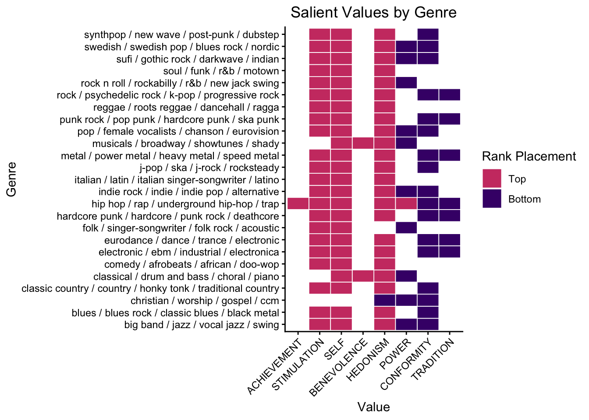
Code
ggsave(here("images", "main_lyrics_RRA_genre.pdf"))Saving 7 x 5 in imageFigure: Values by genre
Code
viridis_col <- viridis(10, option = "D")[6]
plot_df <- rra_speeches |>
group_by(item_ID) |>
summarise(agreement = sum(agree), .groups = "drop") |>
count(agreement) |>
mutate(prop = n / sum(n))
p2 <- ggplot(plot_df, aes(x = agreement, y = n)) +
geom_col(color = "black", fill = viridis_col, alpha = .7) +
geom_text(
aes(label = scales::percent(prop, accuracy = .1)),
vjust = -0.4,
size = 3) +
scale_x_continuous(limits = c(-.5, 7.5), breaks = 0:7) +
xlab("Number of Identified Values per Speech") +
ylab("Number of Speeches") +
theme_classic()
#p2
#ggsave(here("images", "main_speeches_RRA.pdf"), height = 5, width = 7)Code
(p1 | p2) + plot_annotation(tag_levels = "A")
Code
ggsave(here("images", "main_values_RRA.pdf"), height = 5, width = 8)Code
# set value order according to the first dataframe
value_order <- rra_speeches_by_party[[1]] |>
mutate(agree = Score < .05) |>
select(group,value, direction, Score, agree) |>
pivot_wider(
names_from = direction,
values_from = c(Score, agree),
names_sep = "_") |>
filter(Score_top <= .05 | Score_bottom <= .05) |>
mutate(
salience = case_when(
agree_top == 1 ~ 1 - Score_top,
agree_bottom == 1 ~ -(1 - Score_bottom),
TRUE ~ 0)) |>
group_by(value) |>
summarise(mean_salience = mean(salience), .groups = "drop") |>
arrange(desc(mean_salience)) |>
pull(value)Figure: Values by party rater characteristic
Code
(plots[[1]] / plots[[2]] ) +
plot_annotation(tag_levels = "A")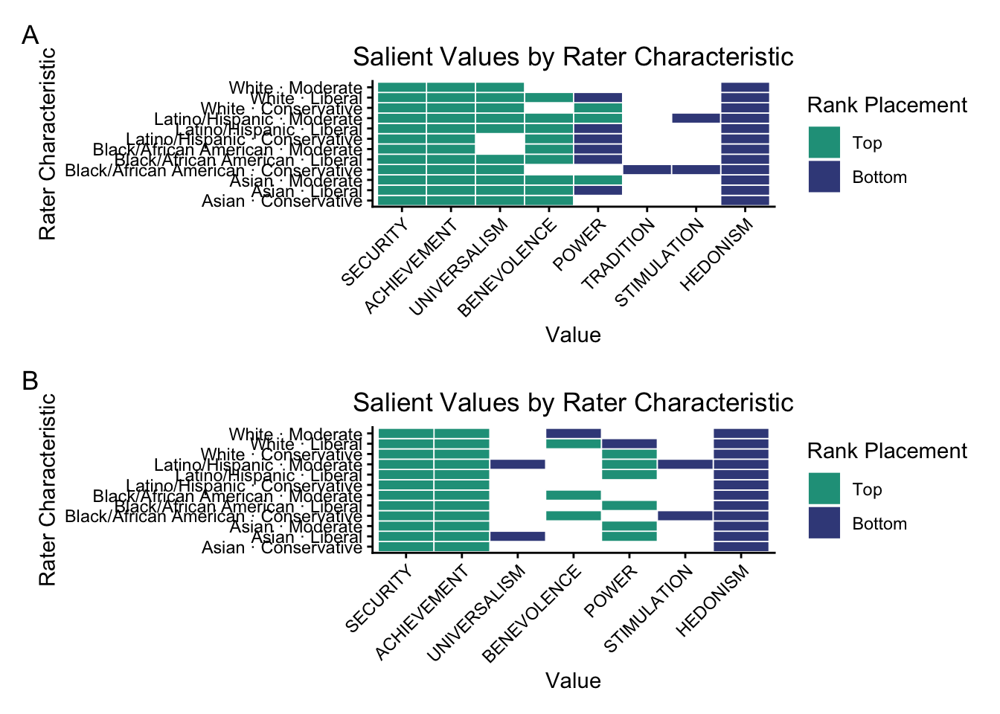
Code
ggsave(here("images", "main_speeches_RRA_characteristic_party.pdf"), height = 7)Saving 7 x 7 in image